Version 3.113, last revised October 13, 2006.
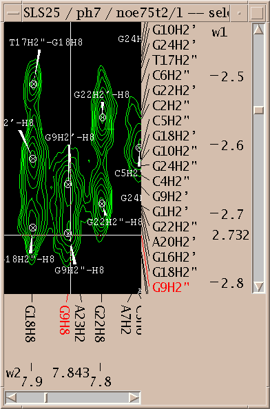Sparky displays processed NMR spectra. You pick, assign, and integrate peaks using a graphical interface. You can work with any number of 2, 3 or 4 dimensional spectra simultaneously. The program has been developped to assist in structure determination of proteins, DNA and RNA. Spectra for input to Sparky can be produced with processing programs NMRPipe, Felix, VNMR, XWinNMR or UXNMR. Output consists of text peak lists showing assignments, chemical shifts, volumes, linewidths, .... Output suitable for structure determination with DYANA or XPLOR, or distance restraint calculation with MARDIGRAS can be generated.
You can get the latest html pages, images, and Postscript in tar or zip format from the Sparky web site. To search for specific words you may prefer the single file html manual. The manual is part of all Sparky distributions. It can be found in /usr/local/sparky/manual under Unix or Linux, in c:\Program Files\sparky\manual under Windows, and in /Applications/Sparky.app/Contents/Resources/manual on Mac OS X.
Sparky helps you assign and integrate peaks in NMR spectra. Spectra processed with NMRPipe, Felix, Varian VNMR, or Bruker software can be used. The output is text lists of assigned peaks, chemical shifts, volumes, linewidths, ....
Assignment w1 w2 Volume lw1 (hz) lw2 (hz) G16H3'-H8 4.905 8.010 7.15e+06 ga 28.6 20.0 G16H4'-H8 4.439 8.013 5.42e+06 ga 35.3 16.9 T17H6-G16H8 7.205 8.004 1.68e+06 T17H7-G16H8 1.459 8.008 2.09e+07 ga 27.5 24.1 T17H2"-H1' 2.509 5.840 4.68e+07 ga 41.2 17.6
Also output formatted for structure determination with DYANA, or distance restraint calculation with MARDIGRAS can be generated. Finding peaks and making assignments is done manually through a graphical user interface. Sparky does not do spectral processing or distance geometry, molecular dynamics, or make toast.
Under Unix the command to run Sparky is "sparky". The usual installation location is /usr/local/sparky/bin. If this directory is in your search path you can start Sparky from any directory by typing "sparky". Under Microsoft Windows (95, 98 or NT) you start the program by double clicking sparky.bat in c:\Program Files\sparky\bin. Sparky has many tools each having their own dialog for setting parameters. You can have many of these on the screen simultaneously in addition to lots of spectrum contour plots. To hide this mass of windows iconify the main Sparky window and all the rest will iconify.
Sparky can directly read Felix matrix files, Bruker processed data, and a UC San Francisco format. Data processed with NMRPipe, Varian's VNMR, or Bruker software can be converted to the UCSF format with programs pipe2ucsf, vnmr2ucsf, and bruk2ucsf that come with Sparky. Felix matrix data must have correct transmitter frequencies, spectral widths, reference shifts, .... Set these with the Felix rmx command. Once you get frequency domain spectral data in Felix, Bruker or UCSF format you can open it using "open" under the Sparky file menu. A new window will appear showing a contour plot.
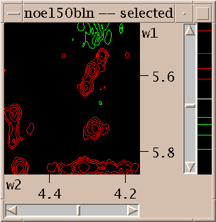
The first thing you'll want to do is adjust the contour levels. Select "contour scale" from the View menu. This adds a scale at the right edge of the contour plot. The positive and negative levels are shown in different colors. The white line in the middle divides the negative levels shown in the bottom half of the scale from the positive levels shown in the top half. These two sets of levels can be adjusted separately. When you first open a spectrum one positive level and one negative level are shown. You can raise the positive level by pressing the mouse button a little below it and moving the mouse up. Dragging the mouse down will create additional lower contour levels. In general there are 3 ways to use the mouse to adjust the levels. By pressing the left mouse button a little below the lowest level in the scale and dragging up or down you remove or add low contour levels. Likewise you can press above the highest level and drag up or down to add or take away high levels. To leave the high and low level fixed but change the number of levels in between press the mouse button in between the highest and lowest levels and drag up for more levels or down for fewer levels. The negative contour levels displayed in the lower half of the contour scale are adjusted in the same way. The colors of the positive and negative levels can be selected with the contour dialog. Some of the color choices such as red-blue, red-yellow and green-blue color the contour lines in a range of colors to aid in discerning height.
To show different regions of the spectrum move the scrollbars, resize the window, and use "zoom in", "zoom out", and "zoom previous" from the View/Zoom menu. Note that the menu entries for zooming have 2-key accelerators listed next to them. The accelerator for zoom in is "zi". Typing zi in the spectrum window makes it zoom in. Another way to zoom in is to select the zoom pointer mode. There's a window of vertical buttons "select", "center", .... This window determines the pointer mode. Select the zoom pointer mode. Then drag a box in a spectrum window. The view zooms to show that region. By "drag a box" I mean press the left mouse button at one corner of the desired region, hold it down and move the pointer, and release the button.
You can show more than one view of a spectrum. Select "duplicate" under the view menu or type the accelerator "vd" in the window you want to duplicate. Another view window will be created. You can adjust its contour levels and the region shown to be different from the original view. Each view has a name shown at the top of its window. The name is derived from the name of the spectrum with a number appended.
You can show as many views of as many spectra as you want. To open a view of a new spectrum use Open under the File menu. The views of any previously opened spectra remain displayed. To delete a window use the Delete View command under the View menu (accelerator vD) or click on the close button on the window frame.

Now you've zoomed in to an appropriate magnification and set the contour levels to eliminate most of the noise. Choose the "find/add peak" pointer mode. If you click the left mouse button over a peak a marker will appear. You've placed a peak marker on the spectrum and it will appear in all views of this spectrum. You can also drag a box around a region, ie. press the left button and move the mouse and then release the button. A rectangular box is drawn and Sparky will place peak markers on all the peaks in the region. How does it do this? It uses a minimum height and optionally minimum linewidth and minimum drop off filters. The minimum positive and negative heights are equal to the lowest positive and negative contour levels. You set the minimum linewidth using the peak pick dialog (accelerator "kt"). The linewidth is taken as the half height width. To avoid picking overlapped peaks you can insist that the data height drop as you move from the center peak position by a specified amount before rising again. This parameter is also set with the peak pick dialog (kt).
If you want to move a peak marker switch to the "select" pointer mode and drag and drop the peaks. If you want to delete a peak switch to select mode, click on a single peak or drag a box around a region to select peaks. Selected peaks are outlined with a square. You can delete the selected peaks by pressing the delete key. If you delete some peaks by mistake you can use the "edit undo" command (accelerator eu) to restore them. This will only undo the most recent peak deletion, peak integration,

Select a single peak and bring up the assignment dialog (accelerator at). Type in a group name and atom name for each axis and press Apply. Press the "Apply" button to make your changes take effect. Dialogs in Sparky have an "Ok" button and an "Apply" button. Ok means make the changes and make the dialog disappear. Apply means make the changes and leave the dialog up. Since you pressed Apply the assignment dialog is still showing so you can continue assigning peaks. Sparky is designed for assigning polymers -- proteins and nucleic acids. Assignment atom names are divided into two parts. For example, P71 CA denotes the alpha carbon of proline residue 71. The first part, the group, is meant to indicate the amino acid residue or nucleic acid base and a sequence number (eg. P71, PRO71, tyr36, a9, GUA15, G15...). If you have peaks from multiple conformations you could add an additional suffix to the group name, for example P71a, P71b. The second part specifies the atom (eg. CA, HA, HB, H, N, H2', H6, ...). The basic features in Sparky do not interpret the group or atom names, so you can use whatever names will be useful in peak lists by subsequent structure calculation programs. Some more specialized capabilities, commonly extensions to Sparky, require that you use standard one letter codes for amino or nucleic acids and standard atom names. At the beginning of the assignment process you won't know much and can use group names like g1, g2, g3, ... and later rename them.
When you make an assignment a label is displayed near the peak. With the pointer in select mode you can drag the label to a new location.
Assignments can be displayed along the edges of a view. To show these resonance panels along the edges of a view use the "show resonances" command under the view menu (accelerator vR). The group and atom names will be shown along both axes. To see the alignment of peaks with these resonance names it help to display crosshairs, a horizontal and vertical line that follow the pointer. Bring up the view settings dialog (accelerator vt), and check crosshair display and press OK.
You've picked some peaks. Now try integrating one. Select the "integrate" pointer mode, then drag a box around a peak you want to integrate. The default integration technique is to use a Gaussian fit. If it worked, the peak will be recentered to the best fit position and will have a circle drawn around it. You can examine the fit by displaying one dimensional cross-sections along the edges of the view. Bring these slice panels up using "show slices" under the view menu (accelerator vS). The profiles of the spectrum data are shown in black and the peak fitting profiles in blue. The horizontal panel shows the horizontal cross-section at the pointer position.
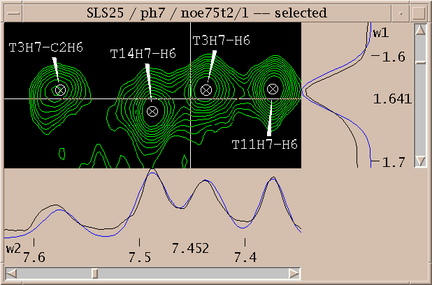To see the numerical volumes and linewidths bring up a peak list (accelerator lt). Press the Options button in the peak list dialog and select volume and linewidth display and press OK. The list shows all peaks in the spectrum and can be written to a file by pressing the Save button.
Peaks can be integrated using different methods. Gaussian or Lorentzian fitting can be done. Overlapped peaks can be simultaneously fit where all selected peaks within the lowest contour line are taken as a group. Groups can also include peaks not withing a common contour line but within a specified distance of each other. You can also integrate peaks by boxing or ellipsing. You drag a rectangle or ellipse around a peak and the heights at all interior points are summed up. The integration technique is chosen using the integration dialog (accelerator it).

Peak lists (lt) are useful for inspecting volumes, linewidths, and other properties and are the primary form of output to be used by other programs in structure calculations. They are also useful for quickly locating a picked peak in a spectrum. Double clicking on a line in the peak list will recenter a spectrum view to show the selected peak. A single click of the middle mouse button has the same effect. You can also select peaks by dragging over multiple peak list lines. Hold the shift key to select additional peaks in another part of the peak list. Commands typed in the peak list window act in the same way as if they are typed to a spectrum view. So you can, for example, hit the delete key to unpick the selected peaks in the spectrum.

Sparky maintains lists of resonances. By a resonance, I mean an atom name and a frequency. The frequency of a resonance is calculated from the positions of all the assigned peaks involving the atom. All peaks are weighted equally in the average. The resonance list command rl displays a list of resonances. Clicking on a line in the resonance list dialog brings up a peak list showing the peak assignments contributing to that resonance frequency. The resonances also appear in the assignment dialog to help you make assignments, and can be shown in resonance panels along the edges of contour plots. Sometimes it is useful to maintain more than one set of resonances. If your study involves two similar molecules or spectra taken under different conditions (pH, temperature) that shift the resonance lines you probably don't want just one set of average resonance frequencies. To handle this Sparky associates a "molecule" name (eg. cyt-b5) and "condition" name (eg. ph7 25C) with each spectrum. These names are chosen by you and typed in using the spectrum dialog (accelerator st). Separate resonance frequencies are kept for each distinct molecule and condition.
To save the data you produce using Sparky use "save" under the "file" menu. This saves assignments, label positions, view window configurations, ..., jvfor a single spectrum. The file containing your processed NMR data (eg. noe150.ucsf) is never modified by Sparky. All Sparky data goes in a separate file in the ~/Sparky/Save directory (eg. named noe150.ses). Each spectrum has its own Sparky session file. When you are working with more than one spectrum, saving the data for each spectrum can be tedious. To save the data for all spectra use "project save" under the "file" menu. This creates a file in ~/Sparky/Projects which contains a list of the spectrum files you are working on. When you start Sparky at a later time you can open the project to load all your spectra. You can also load Sparky data for an individual spectrum by opening a file in ~/Sparky/Save in the same way you opened your processed NMR data. The open command recognizes both processed NMR data and Sparky data file formats.
Contour levels for a view are set with the contour dialog (ct). For the positive levels you set the lowest level, the number of levels, the scale factor from one level to the next, and the color. The level heights increase geometrically. The scale factor is multiplied times the lowest level to get the next higher level. Negative levels also have a lowest level (a negative value), number of levels, scale factor and color. The number of levels can be zero. Some of the color choices such as red-blue, red-yellow and green-blue color the contour lines in a range of colors according to their height. In the red-blue scheme the lowest contour level is red and the highest level is blue with intermediate levels having intermediate colors. This can help you see peaks when looking at highly overlapped regions that are a mass of contours, or when you wish to have low contour levels that show alot of noise.
You can display a scale showing contour levels at the edge of a contour plot using the command vC. The levels can be adjusted by dragging the lowest or highest level up or down with the mouse. This keeps the existing levels (their position and spacing) fixed while adding or removing levels at the low or high end. By dragging up or down starting in the middle of the group of levels you can add or remove extra levels while keeping the lowest and highest level fixed. This changes the positions and spacing of all the intermediate levels.
In the "center" pointer mode a view is recentered to any point you click on.
The view center command vc centers the view on the selected peak. The most useful case is when the selected peak is from another spectrum. If the peak spectrum and the view spectrum are different then it is possible that only some of the view axes will be centered. For example, if the peak is from a 2D HSQC spectrum (15N and 1H axes) and the view is an HNCA spectrum (1H, 15N, 13C axes) then only the proton and nitrogen axes of the view are adjusted. The carbon axis is left in the current position. The exact rule is for each view axis center use the unique peak axis with matching nucleus type. If there is more than one peak axis with matching nucleus then center the wN view axis with the wN peak axis if the nucleus types match. In other cases don't center the view axis. The true peak frequency (including any peak alias) is used. If the resulting center position is off of the view spectrum then multiples of the spectral width are added or subtracted to bring it onto the spectrum.
When you are working with many views the screen gets crowded. To hide views use "view hide" (vh). To bring them back select them by name from the View menu. You can also use the View menu to raise views that are buried behind other windows to the surface. Another way to show hidden views is to use the project view list (pv). You can also iconify views by clicking on the "iconify" button on the window frame next to the "maximize" button in the upper right corner.
To zoom in or out by a factor of 2 use the zi and zo commands. To show the full spectrum use "zoom full" (zf). To step downfield or upfield one plane along the z azis in a 3D spectrum use zd and zu. When you zoom to a new region with these commands or using the mouse in zoom mode or recenter a view on a peak, the previous region being viewed is remembered. Up to 16 previous positions are remembered. You can go to the previous position with "zoom previous" (zp). After going back to previous regions with zp you can return with "zoom next" (zn). Because it is common to make many small moves with the scrollbars, a region is not remembered when you scroll somewhere else. This is to avoid cluttering up the history of previous regions. If you want to scroll away from a region of interest and later come back to it with zp, use the "zoom remember" command zr. This puts the current region in the list of previous regions. To name specific regions so that you can zoom to them by name use the region dialog (rt). You can type numerical ppm ranges to this dialog and associate a two letter accelerator with them. You then use the "region goto" (rg) command followed by your chosen 2 letter region abbreviation to zoom to that region in any spectrum.
The region dialog (rt) allows you to name regions with given chemical shift boundaries so that you can quickly zoom to those regions. To name a region enter the numerical region limits in ppm. You can instead adjust a view so it is showing the desired region and press the Current button to have the boundaries entered for you. Type in a name and a two letter accelerator. The accelerator names do not conflict with Sparky commands so you can choose any two letters. Press the Add button to add the named region to the list of regions. Now you can use the region goto command rg followed by the two letter region accelerator to zoom a view to this region.
You can also apply the current pointer mode to a region. For example, to pick peaks over an entire spectrum choose the find/add peaks pointer mode (F8). Bring up the region dialog (rt). It will show the upfield and downfield limits of the region you are viewing. Press the World button. This sets the limits to include the whole spectrum. Now press Apply Mode to find peaks.
The orthogonal views (ov) command shows three orthogonal planes of a 3-D spectrum. If a peak is selected before typing the command, the three orthogonal planes intersect at the peak position. Otherwise they intersect at the central point of the current view. The three views have their w1, w2 and w3 axes synchronized. This means the center points of the 3 views show the same data point even when you scroll one view or center on a new peak.
You can overlay the contours of one spectrum on another spectrum. You use the overlay dialog (accelerator ol) to set this up. You choose two Sparky views, one to to be shown overlaid on the other. By repeating this process you can overlay as many spectra as you want on one view. You can control the contour levels and colors of each overlaid view separately using the contour dialog (accelerator ct). Printed output does not include the overlaid contours.
You can print contour plots to a Postscript printer with command pt. Only postscript output is available. Color output is supported. Use the Save button to save the postscript to a file. The Preview button is available only on systems that have a postscript previewer. The path to the previewer program must be set in the bin/sparky startup script.
The renumber view command rv renames the selected view to use the lowest available suffix number. When more than one view window is created for a spectrum the views are given unique names by appending "/1", "/2", "/3".... After deleting some of these windows you can renumber a view to use the lowest available number. If the spectrum name without a number suffix is not in use, that name will be chosen.
The selected view is the window that you last clicked on or moved the pointer into. Whether you need to click on a window or just move the pointer over it to select it is determined by your window manager, not Sparky. Most window managers allow you to choose either style. The selected view has the word "selected" in its title. when you execute a command from the pulldown menus it operates on the selected view.
The spectrum settings dialog (st) allows you to adjust ppm references, change sweepwidths, change the molecule and experimental condition, and recompute the estimated noise level for a spectrum.
You can shift the ppm scale for each spectrum to align spectra. Use the spectrum dialog (accelerator st). The ppm positions of all peaks are updated.
The spectrum settings dialog (st) lets you adjust the estimated noise level. This value is used in peak lists when data height is shown as a signal/noise ratio. By default it is estimated as the median of 30 randomly sampled absolute value data heights. You can reestimate the value by specifying how many data points to sample and pressing the Recompute button. The new noise estimate will be displayed. This does not become the new noise value for the spectrum unless you press Ok or Apply. Taking 1000 samples gives a noise estimate that will vary by about 3% with different samples. Estimating with more samples can take alot of time because typically only a small portion of a spectrum is kept in memory and most data points will be accessed from the hard disk.
Specify the molecule and condition for a spectrum using the spectrum dialog (st). A given molecule and condition has a set of resonances associated with it. The resonance positions are calculated by averaging the positions of assigned peaks in all spectra for that molecule and condition. The molecule and condition are only used to name multiple sets of resonances. They can be changed at any time and all resonance lines are automatically recalculated.
The molecule and condition can be any text. They can include spaces and they may be left blank. The condition is meant to include things like temperature and ph (eg "25C ph7"). It is desirable to keep the names short since they are sometimes displayed in the titles of windows and in menus.
You can rename a spectrum and its view windows. The name appears in the spectrum and view menus and on the window frames. Names can contain any characters including spaces. The default name for a spectrum and its view windows is the file name of the NMR data. If a spectrum name is already in use a suffix like ":1", ":2", ... will be appended.
Sparky uses the sweepwidth for each axis of a spectrum to properly handle aliased peaks and resonances. The sweepwidth is used by the peak aliasing commands, resonance panels, and assignment guessing. Usually the sweepwidth along an axis is the full width of the spectrum. But if the nmr data file represents only a subregion of the full spectrum, the sweepwidth will be greater than the width of the spectrum. By default, Sparky assumes the sweepwidth is equal to the spectrum width. To change the sweepwidth use the spectrum settings dialog (accelerator st).
Axes of 2 or more views can be synchronized so that scrolling one view causes the others to scroll. Accelerator yt. Synchronization keeps the center positions (in ppm) of the corresponding axes the same. To make synchronized views match their displayed ranges use "synchronize ranges" (yr).
The accelerators ya, yd, and yt all bring up the synchronization dialog. It lists the axes for every view. You select two or more axes to synchronize and press the synchronize button. Synchronized axes have a letter a, b, c... appearing next to them. Axes labelled with the same letter are synchronized. To remove synchronizations select one or more axes you no longer want to synchronize and press the unsynchronize button. Synchronization keeps the center positions of the synchronized axes matching. Note that you can synchronize two axes from the same spectrum. This forces the view to show the diagonal and is probably not what you want. To make synchronized views display the same range along synchronized axes use synchronize ranges (yr). This will zoom other views to show equal axes ranges. They are matched to the view in which you executed the synchronize reset command (ie. typed yr).
To zoom a view to the corresponding region across the diagonal of a homonuclear spectrum use "transpose axes" (xx). If you try xx on a heteronuclear spectrum the displayed vertical and horizontal axes are swapped keeping the center of the view fixed.
To cyclically permute the axes of a view of a 3-d spectrum use "axis roll" (xr). The center point of the view is kept fixed. On a 2-d spectrum this command swaps the axes.
The "project view list" (pv) shows a list of all your view windows. The project view list shows the sizes, nuclei, number of peaks, and number of assignments for your spectra. A minus sign is shown next to hidden views and a plus sign next to visible views. Double click on list entries to show a hidden view or to hide a shown view. Select one or more lines and press the Hide button to hide or the Show button to show the chosen views.
Use the "view settings" dialog (vt) to change what is displayed in a spectrum view window. You can control the display of axis scales (vs), axis units (xp, xh, xd), nucleus types (xa), aspect ratio, assignment label format, ornament display (os, ls, ps, xs, gs, is), resonances along edges (vR), 1-D cross-sections along edges (vS), peak info status bar (vp), crosshair display (hh, ht, ho), scrollbars (vb), and subtracting fit peaks (sf).
The scales along the edges of views can display ppm units, index units (ie. indices from the NMR data matrix), or Hz using accelerators xp, xd, xh. You can display the nucleus types (H, 13C, 15N) on the scales using "axis atoms" (xa).
The aspect ratio controls how a 1 ppm by 1 ppm cell will appear on the screen. An aspect ration of 3 would make the 1 ppm square appear 3 times wider than it is tall. Aspect ratios less than one make the cell appear taller than it is wide.
The assignment format specifies how to display assignment labels on contoured spectra. The default format is "%a1-%a2" for a 2-D spectrum. The "%a1" means display the full atom name for the w1 assignment. The full atom name includes the group. Then the "-" is just put into the label. Then "%a2" means display the atom name for the w2 assignment. The "%a2" will not display the group if it is the same as the group displayed in the preceding "%a1" part. To force the groups to be displayed use "%A1-%A2". In general, "%a" means display the atom name and leave off the group name if the preceding % format displayed the group, whereas "%A" means always show the full atom name. To show just the group names use "%G1-%G2". To show just the group name for the w2 axis use "%G2".
Views can display a crosshair (vertical and horizontal lines) that follows the pointer. They can also display a crosshair transposed across the diagonal in homonuclear spectra. They can also display a crosshair when the pointer is in another view at the corresponding point in this view. This last capability helps look at corresponding peaks in different spectra. To turn on crosshairs of one type or another use the view settings dialog (vt).
Crosshair tracking from other views shows the crosshair in one view at the corresponding point in another view. What does the "the corresponding point" mean? It means the same ppm values on the w1, w2, w3, ... axes. But if the two spectra don't have matching nucleus types (1H, 13C, 15N) Sparky will make the axis correspondence that makes nucleus types match provided there is a unique correspondence. If there isn't a unique correspondence Sparky chooses one of the possible correspondences based on rules that are beyond explanation.
The switches in the view settings dialog (vt) or the accelerators os, ls, ps, xs, gs, is, turn on and off display of ornaments, labels, peaks, peak groups, grids, and lines. The ornament display switch (os) turns off the display of all ornaments when it is off. When it is on the specific ornaments selected with the other switches are shown.
The "show peak info" command (vp) puts a status bar at the bottom of the current view which displays peak assignment, position, height and linewidth when the pointer is over a peak. If the peak has been integrated by fitting then the fit height and linewidth are shown. Otherwise an estimated linewidth is computed by finding the position at which half the peak height is reached on either side of the peak. Twice the minimum of these distances is shown as the linewidth. If the peak is not positioned at the local maximum the linewidth can be misleading. When the pointer is not over a peak marker but is over a contoured region Sparky will find the local maximum and show its position, height and estimated linewidth.
Use "show resonances" (vR) to display resonances along the edges of spectrum views. The resonance closest to the pointer position is highlighted in blue. If the pointer is over a peak, the assigned resonances are highlighted in red. The resonances often get very crowded making the display along the edges not useful. You can reduce the number of resonances displayed by setting assignment guessing constraints. Press the Guessing button in the assignment dialog (at) to set assignment constraints. For example you can set an (i,i) constraint meaning consider only intra-residue assignments. Then switch on "Thin resonance panels using assignment guessing?" in the preferences dialog (pf). Now a resonance from residue 17 will only be displayed along the x-axis if there is some resonance from residue 17 in the range displayed on the y-axis.
Accelerator vS turns on and off the display of 1-D data cross-sections. The 1-D profiles are displayed along the edges of the spectrum view window. The panel along the bottom edge shows the horizontal data slice passing through the current pointer position. With crosshair display turned on the horizontal crosshair line shows the position of this 1-D section. The panel at the right edge of the view shows the vertical 1-D slice passing through the pointer position. If peaks have been integrated by fitting Gaussians or Lorentzians, the fit profile is shown in the slice panels in blue. The fit profile for selected peaks only is shown in cyan. An additional trace (in green) can show the spectrum data minus the fit peak curve (sf). This is useful for judging the quality of peaks with baseline fitting.
You can adjust the range displayed in the 1-D data profiles shown at the edge of contour plots (accelerator vS). You move the mouse to either the horizontal or vertical slice panel and drag to adjust the range displayed. Holding the shift key while dragging shifts the center line. Alternatively you can have the range automatically adjust to fit the slice data. Set this in the view settings dialog (vt).
A problem with adjusting the slice panels is that when you move the pointer to the slice panel it updates the slices. So you no longer see the relevant slice you want to use to adjust the scales. Here is a way adjust while showing the slice you are interested in. Suppose you want to look at an X axis slice. Move the pointer horizontally to the Y axis slice panel and adjust the scales. Since both X and Y slice panels use the same range you will see the effect on the X slice. Try it and you'll understand what I mean.
Turn on the subtract fit peaks (vf) switch to display contoured data with fit peaks subtracted off. This can be used in conjunction with 1-D slice display to see how well the spectrum data is fit and to see whether there are smaller peaks buried under larger fit peaks.
View windows can contain 3 and 4 dimensional spectra but only a 2D contour plot is shown. One or two sliders are placed at the bottom of the view window to select different 2D planes for viewing. The view depth command vz controls how far a picked peak can be from the currently displayed plane and still be shown. By default picked peaks are shown if they are within half an index unit of the displayed plane. Index units represent the indices into the data matrix and so one index unit corresponds the distance between neighboring planes (ie the separation in ppm or hertz of adjacent planes). Picked peaks have their positions interpolated, so they need not lie exactly in one of the data planes. The view depth command vz shows a dialog where you can specifiy how far away a peak marker can be from the displayed plane and still be shown. If you specify 4 extra planes, then peaks from the 2 planes above and 2 planes below the displayed one will appear. Strictly speaking, with 4 extra visible planes, all peaks within (4 + 1) / 2 = 2.5 index units of the currently displayed plane are shown.
You assign peaks using the assignment dialog (at). Select a peak in a view. Bring up the assignment dialog (at) and type in group and atom names for each axis and press Apply. The peak is labeled with the assignment.
The assignment dialog contains a list of resonances for the molecule and condition of the selected peak. If you click on an axis label (w1, w2, ...) in the assignment dialog the resonance list will scroll to the resonance closest in frequency to the peak position along that axis. If you double click on a line in the resonance list it will fill in that group and atom name for the selected axis.
The Resonance Peaks button brings up a list of peaks from all spectra with an assignment involving the resonance selected in the resonance list.
The assignment delete command (aD) deletes the assignments from all selected peaks.
Press the Guessing button in the assignment dialog (at) to set up assignment constraints. You can consider intra-residue (i,i) guesses or inter-residue (i-1,i) guesses. You can request guesses using only a specific atom name or set of names separated by '|'. You specify the range of chemical shift values away from the peak position to look at. Press the Apply or Ok button after choosing the constraints. Now whenever you show a peak from the same spectrum in the assignment dialog Sparky will look at your current set of resonances and find the closest assignments satisfying the constraints. It puts these in a menu under the "guesses" button in the assignment dialog. Selecting a guess from this menu fills in the assignment. The guessing constraints are also used by the "assignment guessing" pointer mode (sh-F2). When you select peaks in this pointer mode they are assigned if they have a unique assignment guess. This mode will not reassign a peak. Only new assignments are made.
To display a table of chemical shifts where the rows are the different groups (ie. residues) and the columns are the different atoms use the assignment table command tb. The chemical shifts shown in the table are averages obtained from all peaks in all spectra having the same molecule and condition names. To see the number of assignments contributing to each average chemical shift click on the "assignment counts" switch and press the "update" button. You can also have the table entries include the standard deviation of the peak positions contributing to each chemical shift. To display the list of the peaks contributing to a resonance click on its entry in the table.
You can copy peaks with their assignments between spectra. You select the peaks, use the ornament copy command (oc), select the spectrum window to copy to, and use ornament paste (op). For copying peaks across the diagonal of a homonuclear 2D spectrum select the peaks to be copied and use the crossdiagonal ornament copy command oX.
To copy just assignments, assuming peak markers already exist in the destination spectrum, you can use the same two step copy and paste method with the "assignment copy" (ac) and "assignment paste" (ap) commands. The assignment copy command remembers the currently selected set of selected peaks. Then you select the window for a different spectrum and assignment paste tries to apply the assignments to any peaks that are near the positions of the source peaks.
There is also an assignment copy pointer mode. In this pointer mode you just a rectangle around the peaks you want assignments applied to. The source spectrum is specified with the assignment copy dialog (co). Peaks in the source spectrum near the selected peaks are found and their assignments are copied to the selected peaks.
When doing an assignment copy the source peak and the destination peak must have nearly the same ppm position and there must not be any other peak in the source spectrum or destination spectrum that is nearby. What constitutes "close" or "nearby" is determined by the ppm shift tolerance set in the assignment copy dialog (co). Each axis of each spectrum has its ppm tolerance. When determining if there is a nearby peak marker in a given spectrum, the tolerances for that spectrum are used.
For copying assignments across the diagonal of a 2 dimensional homonuclear spectra (eg. 2D NOESY) there is the command aX. You select the peaks you want assignments applied to and assignments are found from symmetrically located peaks across the diagonal.
The resonance list command rl shows a list of resonances for a specified condition. Each line shows a group name, atom name, average chemical shift from all assigned peaks, standard deviation, and the number of assignments made from all spectra. The list can be saved to a file. The list is not automatically updated when new assignments are made or peaks are moved. Press the update button to update the list. After selecting a new molecule / condition from the menu you need to press the update button to show the resonances. The Load button allows you to read a list of chemical shifts from a file. The lines should have the same format as the first 4 columns that the resonance list displays:
Group Atom Nuc Shift G15 H1' 1H 6.029 C17 H2" 1H 2.817 A18 H2' 1H 2.688
Additional columns are ignored. If a resonance in the file already has peak assignments in your spectra then reading the resonance from the file has no effect. The main purpose of the Load capability is to load chemical shifts obtained from other programs so that they can be displayed along the edges of contour plots, and used by the assignment guessing tools.
Use the rename resonances (rr) dialog. If you want to change a group name fill in the old and new group names. Leave the atom names blank. To change an atom name for all groups fill in the old and new atom names and leave the group names blank. To change a specific resonance enter old and new atom and group names. Only resonances for the given molecule and condition are changed. If the condition is left blank then resonances for all conditions of the specified molecule are changed. If the condition and molecule is left blank all resonances for all molecules are renamed. In summary, leaving a field blank means apply the rename for all values of that field. You can delete resonances not used in any peak assignment by renaming them to nothing.
You can copy resonances from one molecule / condition to another. Use the "predefined resonances" command (pd). Copied resonances can be used to aid assignment of a new spectrum. They can be shown along the edges of views (vR) and appear in the list of resonances in the assignment dialog. And they are used when Sparky guesses assignments. Once a resonance is used in a peak assignment its frequency is computed from the average positions of the assigned peaks. To delete resonances that are not used in any peak assignment use "delete unused resonances" (dr). To delete only a few unused resonances, use resonance rename (rr) and rename them to nothing. If you have a chemical shift produced outside of Sparky and would like to read it in to aid in making assignments use the Load button on the resonance list dialog.
You can show assignments as colored lines between atoms on a structure using the molecular display program Midas. Midas does not come with Sparky but is available from the Computer Graphics Labs. If you install Midas in a non-standard location you will need to adjust the path in the Sparky startup script. The mi command shows a dialog where you select a spectrum, PDB file, and line color. Sparky starts Midas and displays assignments for the selected peaks. There is a switch to request that all peak assignments be shown. In this case the assignments for selected peaks will be higlighted. If you select a new peak or peaks the lines in the Midas display are automatically updated. Some assignments will not be displayed because the assignment atom name doesn't match a pdb file atom name. Sparky peak lists can display the distance between atoms in an assignment and the peak lists can be sorted by this distance. By selecting an entry in the peak list, you select the peak and the Midas display will highlight the assignment. You can only display assignments from one spectrum at a time. You can change the spectrum, line color, or pdb file in the mi dialog at any time and press Apply to change the displayed assignments. The lines representing assignments are given a Midas "model number". The lines can be displayed or hidden with the Midas commands "objdisplay model-number" and "~objdisplay model-number".
You can mark folded peaks with the correct frequency. This allows peak lists to display correct chemical shifts. It is also needed to compute correct average chemical shifts from all assigned peaks. To say that a selected peak really belongs off spectrum shifted one sweepwidth down field along the w1 axis use a1, or up field use A1. For axis w2 use accelerators a2, A2.
Spectra acquired in TPPI mode can create aliased peaks that are reflected about the up field or down field edge of the spectrum. The u1 command gives the selected peak an alias by reflecting the peak w1 position about the up field spectrum edge. Using the u1 command a second time removes the alias from the selected peak. The u2, u3 and u4 commands mark selected peaks as aliased in the w2, w3 and w4 dimensions. The d1, d2, ... commands perform the reflection about the down field edge of the spectrum.
To center a peak at the local maximum use "peak center" (pc). This uses quadratic interpolation to position the peak to a resolution finer than one data point. If you want to type in the position select a peak and use the ornament properties dialog (ot).
To delete a peak marker select it and press the delete key. You can select peaks using the mouse in the Select pointer mode, or you can click on lines in a peak list. If you select multiple peaks, they are all deleted when you press the delete key. If you delete some peaks by mistake use the "edit undo" command eu to restore them. The eu command only undoes the effect of the most recent peak delete, peak integration or peak repositioning.
The most accurate linewidths are obtained by integrating with Gaussian or Lorentzian fitting. This can be inconvenient because fitting sometimes fails. The "estimate linewidth" (pe) command gives full width at half the peak height for all selected peaks. This command first centers the peaks at the local maxima. You can manually set linewidths using the ornament properties dialog (ot). The linewidths can be seen in peak lists. Instead of looking through a peak list you can have the linewidth displayed in a status bar at the bottom of the view window when the pointer is over a peak. Use show peak info (vp) to turn this status bar on or off.
You can define a set of selected peaks as a peak group (pg). Peak groups have a volume and an average position weighted by the peaklet volumes (if integrated). They are intended to represent multiplet peaks.
You can do two types of integration. The preferred method is to fit peaks to Gaussian or Lorentzian functions and get the volume from the fit height and linewidths. In cases where this doesn't work you can sum up the data heights at each point in a box or ellipse surrounding the peak. You choose the box or ellipse by dragging out the region with the mouse while in the "integrate" pointer mode. For the fitting method you can also use the "integrate" pointer mode and drag a region around the peaks to integrate or you can select the peaks and use the "peak integrate" command (pi). You set the method of integration using the integration dialog (it). In rare cases you might want to set the peak volume by hand. For instance, if you have a doublet peak and one component is overlapped you could integrate the unoverlapped part and manually double the volume. You type in the volume value by selecting the peak and using the ornament properties dialog (ot).
When you integrate by Gaussian or Lorentzian fitting you need to specify the data to use for the fit. The default is to use data above the lowest displayed contour level. There is a switch in the integration settings dialog (it) to use data points within a rectangle drawn with the mouse. This is only possible for 2-D spectra. You can also select data both within a rectangle and above the lowest contour.
If the lowest contour contains more than one selected peak and the "grouping method" in the integration dialog is set to "common contour" then all the selected peaks within the contour will be fit simultaneously. That is the positions, heights and linewidths for all peaks are adjusted concurrently to achieve the best fit to the data. If you don't want peak positions or linewidths to change, switch off "Allow peak motion?" and/or "Adjust linewidths?" in the integration dialog (it). Even if peaks do not lie within the same contour they can be simultaneously fit if they are within a specfied distance of one another. You turn on "Group close peaks?" in the integration dialog and specify a maximum distance (in Hz) for each axis. Two peaks are grouped if they are within the specified distances along all axes.
If you are fitting a peak that is close to another peak that has already been fit you might want to turn on "Subtract fit peaks?". This subtracts the fits of other peaks from the data before fitting the new peak.
The "Fit baseline?" option adjusts baseline offset and slope parameters when doing the fit. For this to work well you need to use data around the base of the peak. It is convenient to set "Use data within rectangle?" on and "Use data above lowest contour?" off when fitting baselines.
If a peak has been successfully integrated, the peak marker has a circle drawn around it. The fit linewidths and volumes and residual errors can be inspected in a peak list. This information is also output to the main Sparky window when the integration is performed. To see the fit and data in 1-D cross-sections turn on slice panels. The slices do not show the baseline fit (because each fit can have a different baseline). Only the Lorentzian or Gaussian part is shown. To judge whether the baseline fit is good you can have the 1-D slices show the difference between the spectrum data and the Lorentzian or Gaussian shape (sf). What is left should be a smooth baseline. You can also have the contour plot show the spectrum data with peak fits subtracted (vf).
The fitting code uses the simplex method to adjust the positions, heights, and linewidths of all peaks within a common contour simultaneously. It minimizes the sum of squares between the Gaussian or Lorentzian line shape and the actual spectrum data at spectrum points lying withing the lowest contour or dragged rectangle. The "fit residual" is reported in the main Sparky window as rms as in the following example:
Isolated peak @ 4.796 7.797 lw 30.093 20.221 vol 9.244e+06 rms 4.5%
It is also available in peak lists (lt) by using the Options... button on the peak list dialog and switching on the "fit residual" field.
The residual for a peak is calculated as follows. Take the sum of the squares of the differences of spectrum values from the Gaussian or Lorentzian fit at each spectrum point used in the fit, divided by the number of data points and take the square root to get a root mean square deviation of the spectrum height from the fit. Multiply this times the number of data points to estimate the volume error and then divide by the fit volume to express it as a fraction. That fraction is what is shown as rms or "fit residual". It is a measure of the volume error due to the data not matching the Gaussian or Lorentzian shape.
Each spectrum has its own set of integration settings. You can select the spectrum at the top of the integration settings dialog. There is currently no way to change the settings for all spectra at once. Remember that when you change a setting you must press the Apply button or the Ok button for the change to take effect.
The fit procedure uses an iterative procedure to minimize the sum of the squares of the errors between the fit curve and spectrum data. The iterative procedure can move peaks far away or give them unreasonable linewidths. To prevent this you can specify the maximum distance any peak should be moved along each axis. And you can specify upper and lower bounds for linewidths. You can also handle this by turning off "Allow peak motion?" and "Adjust linewidths?". You can copy linewidths and positions from other peaks with the same assignment that have already been integrated using the copy linewidths (cl) extension.
If you try to simultaneously fit the linewidths, positions and heights of a group of more than 5 peaks (25 degrees of freedom) be prepared to wait a while. You might hit the cancel button that appears while the fit is being calculated, raise the lowest contour level (ct) so that the group separates into smaller groups, and retry the integration. Or you can integrate by the box or ellipse method.
If the lowest contour enclosing a peak encompasses a giant region, for example, if it includes all the diagonal peaks, then the integration will fail with a message about the contour being too big. You can raise the contour level to make the region small. Or you can turn on "Use data within rectangle?". If a peak is below the lowest displayed contour (ie. has no contour surrounding it) then it will not be integrated if the fit uses only data above the lowest contour because in this case there is no data to fit to. Lower the contour levels or turn on "Use data within rectangle?".
The unintegrate command pU erases the volume and linewidth of a peak. You might use this on peaks whose volume seems unreliable because of overlap. By unintegrating you can eliminate questionable volumes from peak lists.
You can place labels on peaks that are not assignment labels. These labels can contain any text you want. Select a peak and use the peak label command (pl). Or select the "add label" pointer mode and click on peaks to label them. A dialog will come up for you to type in the label.
To place assignment labels on all selected peaks use the lb command. To remove labels from selected use the lB command.
To automatically have labels in the current view moved so they do not overlap one another or peak markers use the unoverlap labels command lu. Each visible label is moved by small amounts in the direction (up, down, left or right) which minimizes its overlap with other labels and peak markers. This procedure is iterated to unoverlap all labels. If you are not satisfied with the results you can immediately move the labels back with the undo command eu. Note that in 3 or 4 dimensional spectra arranging the labels to be non-overlapping in one plane usually makes them overlap when viewed in other planes (because additional labels become visible). This command does not know to avoid overlapping the arrows connecting assignment labels to peaks.
The right offset labels command lr moves all visible peak labels to the right of their peak markers. The gap between the left edge of the label and the center of the peak marker is twice the peak marker size. Use the undo command eu immediately after to move the labels back to their original positions if you don't like the results.
Use the peak list command (lt) to bring up a list of all peaks in a spectrum. If there is already a peak list for the spectrum its window will be raised on top of all other windows. To force a second peak list window to be created for a spectrum use the new peak list command nl. Peak lists can display assignments, chemical shifts, volumes, linewidths, signal to noise ratios, data height, deviation from average resonance frequencies, .... Press the Options button to change the set of fields displayed. Use the Save button to write the list to a file. You will probably need to produce peak lists in a precise format for input to other programs that calculate molecular structures. You can either massage the peak list file using your favorite tool (Perl, awk, Tcl, vi) or you can write a Sparky extension in the Python language to directly output the desired format.
Lines in a peak list are highlighted if the peak is selected. Clicking on a peak list line will select that peak. Double clicking on a peak list line will cause a view to center on that peak. And selecting a peak in a view will cause peak lists to scroll to that peak.
You can display a peak list containing peaks from all spectra that are assigned with a given resonance. There are several ways to get this list. You can press the Resonance Peaks button in the assignment dialog (at). You can use the command r2 which bring up the list with for the w2 resonance of the currently selected peak. The commands r1 and r3 do the same for axes w1 and w3. If you click on a chemical shift in an assignment table (tb) the list for that resonance is shown. Or you can use the "resonance assignments" command ra and select a condition and a resonance using the entry fields and menus. (The menus pull down from the odd V character to the right of the entry field. Yeah it's weird.)
There is a peak list option called "Pair crossdiagonal peaks?" If you turn this on, peaks in 2-D homonuclear spectra that are assigned on both sides of the diagonal are placed on adjacent lines in the peak list. This facilitates comparing volumes or other properties.
Sparky peak lists can be output to a file in MARDIGRAS or DYANA format. You select "Mardigras format" or "Dyana format" from the peak list options dialog. Turn off the display of all other fields unless you want these in the output file. The DYANA format puts the peak note in the last column which is intended to indicate "weak", "medium", or "strong". There will be blank lines in the list for unassigned peaks. These are place holders. Each peak in a spectrum always occupies a line in the peak list even if no data is displayed. Blank lines are filtered out when you write a peak list to a file.
You can attach a note to a peak to record unusual features. You place a note on the selected peak(s) using the note dialog (nt). The Apply or Ok buttons set the note for all selected peaks. The notes can be displayed and searched for in peak lists.
Use the find/add peak pointer mode (F8) to pick peaks. Clicking on a point in a spectrum view will place a peak marker there. You can move the marker to the local maxima with the peak center command (pc). Dragging a box will place peak markers at local maxima satisfying minimum height, linewidth and drop off requirements. You can pick peaks over the whole spectrum using the region dialog (rt). The positive and negative height thresholds equal the lowest positive and negative contour level. You can adjust the contour levels with the contour scale (vC) or the contour dialog (ct). The minimum linewidth threshold is set with the peak picking dialog (kt). The default value is zero which has the effect of no minimum linewidth. The linewidth for a prospective peak is computed as the full width at half height. The minimum drop off requirement is a way of filtering out overlapped peaks. If the data height does not drop off by a specified amount as you move along each axis from the peak marker before starting to rise then that peak is not picked. The specified amount is given as a fraction of the total peak height. The default value is zero so there is no dropoff requirement by default.
You can select peaks using the "select" pointer mode (F1). Select individual peaks by clicking on them with the left button. Drag a box around a group of peaks to select all of them. Selecting a peak or group of peaks causes all other peaks to be unselected. To avoid unselecting the currently selected peaks, hold the shift key while pressing the left mouse button. Pressing the shift key and clicking on a selected peak will deselect it without deselecting other selected peaks.
There are commands to select specific groups of peaks in the currently selected spectrum.
| All peaks | pa |
| Fully assigned | pF |
| Partially assigned | pP |
| Unassigned | pN |
| Select peaks by color | pC |
| Invert peak selection | pI |
| Aliased peaks | pA |
| Intra-residue assignments | pR |
| Sequential assignments | pS |
| Medium range assignments | pM |
| Long range assignments | pL |
The select peaks by color command finds all peaks of the same color as a currently selected peak. Sequential assignments means i to i+1. Medium range assignments are i to i+2, i+3, or i+4. Long range assignments connect atoms 5 or more residues apart. All of the selection commands except select peaks by color unselects all previously selected peaks.
You can draw noesy walks using lines. Select the "add line" pointer mode. Now click on a position to start a line and another position to end the line. Lines are forced to be vertical or horizontal. Grids are lines that extend from edge to edge of a spectrum and are intended to be used for looking at alignments. Select the pointer mode "add grid horz", "add grid vert", or "add grid both" and then click on a point to place a grid. Lines and grids appear in all views of the spectrum on which they are placed.
"Ornaments" are peaks, labels, lines, grids, peakgroups, ie. spectrum annotations. You can change their color and size using the ornament dialog (ot). You can lock peaks (pk) so that they are not moved accidentally with the mouse, or during integration. Peak, label, line, and grid positions can also be locked with the ornament dialog. If you attempt to move a locked ornament, it will not move and a warning will be written in the main Sparky window.
If Sparky doesn't do what you want you can write your own extension in Python. You can also make use of extensions that other people have written. If you want to do something similar to what an existing extension does you can customize it.
New developments in Sparky are often done in Python. Core features are implemented in C++. Python is simpler than C++ and is an interpretted language so an extension can be added or modified without building new Sparky executable. Some of the extensions below are inconveniently slow, their reliability is lower than the core C++ features, and they are more likely to be changed in future releases than are core features. In spite of these drawbacks many do tasks that cannot be readily done using only core features.
Errors that occur in a Python extension generally do not cause Sparky to crash. Instead the Python shell window pops up and displays a stack trace. The stack trace shows exactly what functions in which files of Python code were executing when the error occurred. The last line indicates the type of error. For instance, if you mistype a PDB file name to an extension it may fail with an I/O error indicating the file could not be found. Many of the Python extensions do not adequately check their input and catch such problems. In these cases looking at the last line of the stack trace may indicate what caused the problem.
| Extension | File | Description |
|---|---|---|
| Align spectrum (al) | align.py | Shift ppm scale to align peaks in two spectra |
| Assignment distances (ad) | distance.py | List assignments with far atoms, peaks with multiple close atom assignments, close atom pairs with no assignment, ... |
| Atom name translation (ax) | atomnames.py | Show translations used to convert non-standard atom names to standard names. |
| AutoAssign (aa) | autoassign.py | Run protein backbone automatic assignment program AutoAssign |
| Center view setup (cv) | centerview.py | Center spectrum view on mouse position or peak in another view. |
| Chemical shift plot (cs) | chemshift.py | Plot chemical shifts for atoms |
| Chimera molecule view (km) | chimeraview.py | Display molecule and assignment lines with Chimera |
| Copy peak linewidths (cl) | copylinewidth.py | Copy peak linewidths and positions |
| CORMA simulated spectrum (cx) | cormaspectrum.py | Create a simulated NOESY spectrum using CORMA predicted peak intensities |
| DYANA / XEASY format (xe) | xeasy.py | Output chemical shift and peak lists for structure calculation with DYANA |
| Fold spectrum (f1,f2,f3,f4,F1,F2,F3,F4) | foldspectrum.py | Shift spectrum ppm scale one sweepwidth for finding aliased peaks |
| HC peaks (hc) | hcpeaks.py | Place peak markers on a C13 HSQC spectrum using assigned resonances |
| Linewidth plot (lp) | linewidthplot.py | Plot linewidths for peaks for each resonance |
| MARDIGRAS format (mf) | mardigras.py | Output a peak list for use by MARDIGRAS, a relaxation matrix distance bounds calculation program |
| Midas atom picking (ma) | midaspick.py | Pick atoms using Midas 3D display and show peaks |
| Midas constraints (mc) | midasconstraint.py | Display molecule with Mardigras constraint violations using Midas |
| Mirror peaks (md, mp) | mirror.py | Find mirror peaks in HSQC-noesy spectra |
| Molecule sequence (sq) | sequence.py | Enter molecule sequence for use by other extensions |
| NOESY assignment possibilities (na) | noesyassign.py | Tabulate NOESY intra-residue, sequential, medium and long range assignments |
| Open spectra (fm) | openspectra.py | Open several spectra with a multiple file selection dialog |
| PDB Atom Names (pn) | pdb.py | Find Sparky resonances with no corresponding PDB model atom |
| Peak list (LT) | peaklist.py | List peak assignments, volumes, linewidths, PDB model distances, Mardigras distance bounds, Corma predicted intensities, ... |
| Peak table (pb) | peaktable.py | List peaks with columns for several spectra |
| Python shell (py) | pythonshell.py | Shell for typing Python commands and display errors |
| Read peak list (rp) | readpeaks.py | Read a peak list from a file and create peaks on a spectrum |
| Relaxation fitting (rh) | relax.py | Fit peak heights or volumes in a series of spectra to a decaying exponential. |
| Reposition sequence (rs) | reposition.py | Reposition assigned protein fragment using chemical shift statistics |
| Restricted peak picking (kr) | restrictedpick.py | Pick peaks using peaks from another spectrum as a guide |
| Shift resonances (mv) | movepeaks.py | Move one assigned peak and have all other peaks on resonance lines moved by the same amount. |
| Spectrum labelled axis (la) | axes.py | Specify spectrum proton axis labelled by a heavy atom |
| Spectrum region RMSD (rm) | regionrmsd.py | Compute mean and RMSD for selected spectrum regions. |
| Spin graphs (sg) | spingraph.py | Show a diagram of atoms connected by lines, one line for each assigned peak |
| Spin graph assigner (ga) | assigngraph.py | Explore possible assignments using spin graph display |
| Strip plot (sp) | strips.py | Show strips of 3-d spectra in a single window |
| Volume errors (ve) | volumeerror.py | Set volume error estimates based on several criteria |
| XPLOR restraints (xf) | xplor.py | Output a restraint list for use by XPLOR |
Align one spectrum with another by matching peak positions (al).
This dialog shifts the ppm scale of one spectrum so that a selected peak is at the same position as a selected peak in another spectrum. For example, you can align the amide proton and nitrogen axes of a triple resonance HNCA spectrum using an N15 HSQC spectrum. Exactly one peak must be chosen in the reference spectrum and one peak in the spectrum to be aligned. The current axis shift is adjusted by the difference in ppm between the two selected peaks.
Use atom distances to check noesy assignments (ad).
You can list assignments with protons farther apart than a specified distance, peaks with more than one assignment where the resonance lines are close and atoms are close, all pairs of close atoms having no assigned peak, unassigned peaks for which reasonable assignments exist, .... This works for 2-D noesy and 3-D hsqc-noesy spectra.
Atom coordinates are read from a PDB file. If a Sparky atom name does not match a PDB file atom name then assignment distances involving that resonance are not available. This extension is currently not able to translate atom names. To get distances for all assignments you can make a PDB file that uses your Sparky atom names.
Show atom name translations used in converting Sparky atom names (ax), PDB file atom names, Mardigras file atom names, ..., to standard atom names.
Some Sparky extensions need to compare atom names from different sources. For example, the Python peak list extension (PL) can show proton-proton distances for assigned peaks calculated from a PDB model. If the atom names used in the PDB file do not exactly match the atom names used in Sparky assignments then translations need to be done to match the names. The spin graph extension tries to display residues using standard templates. For this to work the Sparky atom names must be matched to the standard atom names for which the templates are defined. The mirror peak extension needs to determine the name of the heavy atom attached to Sparky assigned protons. It finds the heavy atom name by looking up the proton atom name in a table based on standard atom names.
Sparky attempts to accomodate minor atom name variations, for example, GLY <-> G and and HN <-> H and HB2 <-> 2HB and H2" <-> H2'2, It does this by defining a set of standard names and translations between non-standard and standard names. When a new source of atom names is read (eg. PDB file, Mardigras constraint file, Corma predicted intensities file, ...) Sparky guesses what translations to apply. Translations define a one to one mapping between the non-standard and standard names. They are used to compare atom names and also when lookup in standard atom tables is needed (eg. to determine attached heavy atom, or determine atom layout for display of a residue).
The atom name translation dialog (ax) shows what translations are being used for each set of atom names (PDB files, Sparky names, ...). Initially Sparky guesses the translations to use. The dialog lets you select a different set of translations and lets you see what atom names are not recognized and not translated to standard names.
The translations are defined in the file atomnames.py. You can copy that file to your ~/Sparky/Python directory and add additional translations following the instructions and examples in that file.
There are many limitations of the atom translation facility. Here are a few.
Setup and run automatic assignment program AutoAssign (aa).
AutoAssign is a program that does protein backbone assignment. It was developed by Gaetano Montelione's group at Rutgers. It is not part of the Sparky distribution. You can get it from http://www-nmr.cabm.rutgers.edu/software. It uses lists of picked peaks from a 2D N15 HSQC spectrum and the following 8 triple resonance spectra: HNCO, HN(CA)CO, HNCACB, CBCA(CO)NH, HNCA, CA(CO)NH, HNHA, HA(CO)NH. It is possible to run the program using fewer spectra. The two HA spectra and the two CO spectra can be omitted. The following paper describes the program. "Automated Analysis of Protein NMR Assignments Using Methods from Artificial Intelligence", J. Mol. Biol. (1997) 269, 592-610. The paper tested the program on six proteins ranging in size from 58 to 121 amino acids. In all cases almost all assignable resonances (more than 90%) were correctly assigned.
The Sparky interface to AutoAssign works on Unix and Linux platforms. On Windows it is not able to start AutoAssign (because the extension uses the fork() system call which is not available on Windows). It can be used on Windows by starting and running AutoAssign separately. It has been tested with AutoAssign 1.6.1 and AutoAssign 1.7.2 on SGI and Linux platforms.
This Sparky extension exports the peak lists needed by AutoAssign, runs the program (taking seconds to minutes), imports the calculated resonance assignments, infers peak assignments, and displays the peak assignments using the spin graph assignment tool. Files containing peak lists and a spectrum table file are written and passed to AutoAssign. You specify a temporary directory where the files will be created. All picked peaks in the spectra are exported to AutoAssign. The restricted peak picking extension is useful for creating intial peak lists for the triple resonance spectra. The previous peak assignments for the spectra are deleted and the new calculated assignments are made to the Sparky peaks. You can inspect the assignments using the spin graph display, add or remove peaks to fix problems and rerun AutoAssign. Or you can use the calculated assignments as a starting point for manual assignment.
You specify the spectra to use with the Spectrum Setup dialog. The spectra containing peaks for AutoAssign must be opened in Sparky. This extension tries to identify the HSQC, HNCO, HNcaCO, HNCA, HNcoCA, HNCACB, HNcoCACB, HNHA, HNcoHA spectra using their Sparky names. It looks for the words n15hsqc, hsqc, hnco, hncaco, hnca, hncoca, caconh, caconh, hncacb, cbcaconh, hncacacb, cbca, hnha, haconh, hncoha in the spectrum names to make the identification. You can use the menus to specify different spectra. Although AutoAssign was designed to use the full set of spectra, it can be run without the two HA and two CO spectra. To leave these out choose the blank entry in the spectrum menus.
The PPM tolerances for HN, N15, CA, CB, HA and CO to be used by AutoAssign are also specified in the Spectrum Setup dialog. These tolerances are used by AutoAssign to determine assignments. Also they are used to convert the resonance assignments AutoAssign makes to peak assignments. AutoAssign does not output peak assignments, so these must be deduced from the resonance assignments.
For each spectrum you can specify if certain peaks are negative. For example, the glycine residue may have negative peaks in the HNCA spectrum. To indicate this you would specify CA {G} as the phase for that spectrum. This syntax is described in the AutoAssign documentation. As another example, to say that CB peaks in a HNcoCACB spectrum have negative intensity you would use CB {ACDEFHIKLMNQRSTVWY}.
You should have the AutoAssign programs AsciiClient and AutoServer in your execution search path before you run Sparky. These programs are found in the Server directory of the AutoAssign distribution. If they are not in your path you can specify a full path to the programs using the dialog obtained by pressing the Server... button on the main AutoAssign dialog.
Pressing the Server... button brings up a dialog that allows you to control more aspects of the AutoAssign run. You can specify an already running AutoAssign server to use. If instead you let Sparky start the AutoAssign server it will start it on the machine Sparky is running on using the port number you specify. If the AutoServer and AsciiClient programs were not in your shell search path when Sparky was started, you can specify full paths to the programs.
You can edit the script that AutoAssign will run to make assignments. The AutoAssign 1.5.2 documentation doesn't describe this script language but perhaps a later version of the program will document it. The Run AutoAssign button on the main dialog runs the script and shows the resulting assignments. Alternatively you can run through the AutoAssign script one line at a time using single step mode. You first press the Start button to start AutoAssign. Then each time you press the Run Line button the line in the script text box containing the insertion point is run and the insertion point is advanced to the next line. Sometimes more assignments can be made if you run elements in the script multiple times. You can inspect the output, move the insertion point to a previous line in the script, and re-run that line to try to improve the results. You can also select a group of lines from the script and press the Run Selected Lines button. Pressing the Show Assignments button obtains the current resonance list and makes and shows peak assignments. To start over press the Quit button to end the current AutoAssign session and then press Start to begin again.
Because of the simplistic way Sparky communicates with AutoAssign, Sparky will freeze while it waits for AutoAssign to complete a calculation. If AutoAssign goes off on an unexpectedly long calculation the only way to interrupt it and regain control of Sparky is to kill the AsciiClient process. If users request it I will write more sophisticated non-blocking interprocess communication which will allow Sparky to continue to function as AutoAssign is calculating.
Sometimes AutoAssign fails to start. Starting AutoAssign requires starting two programs a server and a client. I have observed two problems. One is that the server is not yet ready to accept connections when the client starts. The result is that the client program crashes and an error message saying "AutoAssign client exitted" will be shown. Sparky starts the AutoAssign server, sleeps for a while, and then starts the client program. You can try lengthening the sleep time using the Server dialog if you get the client exitted error message. The other problem is the server fails to start because the port you are trying to use is not available. This can happen after you have run the server once successfully. Even after the first server has exitted, starting a second server with the same port number sometimes fails. When the server fails to start you'll get a message saying "AutoAssign server exitted". The solution for this problem is to change the port number in the Server dialog. Both of these failures to start AutoAssign can cause a broken pipe error message in the Python shell window. An alternative way to work around these errors is to start the AutoAssign server by hand (Unix command: AutoServer 8050 &) and tell Sparky to use this server in the Server dialog.
AutoAssign is able to handle spectra folded in the N15 dimension but this is not currently supported by this Sparky extension.
On Windows Sparky cannot start AutoAssign because it relies on the fork() system call which is not available on Windows. You can still use this extension to export peak lists for AutoAssign, then run AutoAssign by hand through its native interface, and lastly read the resulting assignments into Sparky. You need to select in Sparky the spectra and tolerances to use as described above. Pressing the Write Peak Lists button will then produce the AutoAssign format peak lists and the table.aat describing the peak lists and tolerances for AutoAssign. These files are placed in the directory specified in the Spectrum Setup dialog. Then you run can run AutoAssign by hand on table.aat and calculate assignments. Write the resonance shifts computed by AutoAssign to a file in publication format. Then use the Read Shifts... button on this Sparky extension to read the resonance assignments and compute and display peak assignments. Reading the shifts will update all peak assignments and the spin graph display.
Center spectrum view windows on pointer position or selected peak (cv, cm, cp)
With the center view dialog (cv) you choose a spectrum window to be centered by subsequent uses of the center on mouse (cm) and center on peak (cp) commands. The center on mouse command will center the prespecified view at the current mouse position. The center on peak command centers the prespecified view on the selected peak. If "center when peak selected" is turned on, then selecting a peak causes the specified view to center without typing any command. When the peak or mouse position comes from a spectrum other than the one to be centered then a correspondence is made between the spectrum axes. Each axis of the view to be centered is matched with the axis of the source spectrum having the same nucleus type. If more than one axis in the source spectrum has matching nucleus and one of the matches has the same axis number (w1, w2, ...) then that axis is used. In other cases no correspondence is made with the axis of the centered spectrum and so that axis does not get centered.
There is a simpler view center command vc that centers the spectrum window it is typed in instead of centering a pre-specified window as the above described commands. The vc command centers at the position of the selected peak. All of the view centering commands can be used between spectra of different dimensions (eg. select a 3D HNCA peak and center 2D N15-HSQC spectrum).
Plot resonance lines by group/atom type (cs).

Plot resonance frequencies as tick marks along a horizontal scale. Each group/atom type is plotted on a separate line. Only resonances in the specified ppm range are shown. A subset of atoms to show can be specified as a comma separated list of atoms or groups and atoms (eg. HA, K CD, N, H2', C H5). Clicking on a tick mark brings up a list of peaks assigned with that resonance.
You can create Postscript output for printing using the Postscript button. This has the strange behaviour that only the region being displayed on the screen is put into Postscript, not the whole plot. You need to adjust the screen window size to be able to get the printed output you want. This is a limitation of the Tk window system canvas printing capability. Multi-page output is also not supported.
Display molecule and assignments as lines using Chimera (km).
| 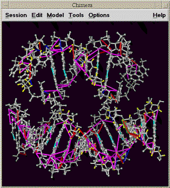 |

|
Chimera is a molecular display program developped by the Computer Graphics Lab at UC San Francisco. It is the successor to their Midas and MidasPlus molecular display programs. This extension displays in Chimera a PDB model and peak assignments as lines between atoms. You can select peaks in a noesy spectrum in Sparky and have the corresponding lines representing the assignments highlighted in the model. And you can select an assignment line or pair of atoms on the model and Sparky will show you the corresponding position in a noesy spectrum. Restraint violations can also be shown with different degrees of violation shown as different color lines.
Only certain versions of Chimera will work with Sparky. For Sparky 3.112 use Chimera version 1.2154 (known not to work with Chimera version 1.2065 and earlier, nor with Chimera versions 1.2184 through 1.2199). For Sparky 3.110 or 3.111 use Chimera version 1.2065 (known not to work with more recent Chimera versions). For Sparky 3.106 use Chimera 1.1442. These restrictions are primarily because both applications need to be using the same version of Python. Sparky 3.112 uses Python 2.4, Sparky 3.111 uses Python 2.3 and Sparky 3.106 uses Python 2.1. Sparky 3.110 does not work with Chimera on the Mac as of March 2004 because Chimera on the Mac requires a special version of Python.
Currently it is only possible to start Chimera one time during a Sparky session. If you close Chimera you will have to restart Sparky to use Chimera again. This is a problem with Chimera. Chimera and Sparky run within the same Python process so Sparky must start Chimera. You cannot use a Chimera session you started separately. Sparky uses the CHIMERA environment variable to determine where Chimera is installed. It's value is a path to the directory containing the Chimera bin, lib, share directories. You can set CHIMERA in your environment or you can modify the Sparky startup script to set CHIMERA. The Sparky startup script is bin/sparky.bat on Windows, Sparky.app/Contents/Resources/bin/sparky on Mac, or bin/sparky on other Unix machines. Edit the Sparky startup script if Chimera is not installed in the standard location, C:\Program Files\Chimera on Windows, or /usr/local/chimera on Unix.
Open your Sparky project and start the Chimera extension with the km command. Specify a PDB file and press Show. Chimera will be started and the pdb model will be displayed and assigned atoms will be colored. Selecting an assigned NOESY or NOESY-HSQC peak will cause a line to be drawn between the corresponding two protons. When you select other peaks, new assignment lines will be drawn. The lines corresponding to the currently selected peaks are drawn with a bright green outline in Chimera indicating that they are selected in Chimera. To select an assignment line in Chimera and have your NOESY or NOESY-HSQC spectrum recentered to show that peak position hold the CTRL key and click on the line. Or you can select a pair of protons, each with CTRL click, and the currently selected spectrum will be recentered. If drawing assignment lines fails or recentering a spectrum fails a message explaining why will appear in the Chimera model (km) dialog. Usually the message will say that matching atom names in the PDB model and your Sparky project could not be found, or that the resonance for an atom is not assigned. Atom identification uses the atom name translation facility. Assignment names that refer to more than one atom (eg methyl group ALA MB) are not matched to any molecule atom. Assignment lines involving such NMR pseudo-atoms are not shown.
You can show satisfied and / or violated restraints as colored lines connecting pairs of atoms. You need a restraint file in Mardigras format. Mardigras is a program to compute NMR distance restraints from NOESY peak intensities using complete relaxation methods. It was developped by Tom James' NMR group and UC San Francisco. The lines in the file look like:
ATOM_i ATOM_j LOW_BNDS UP_BNDS H1' 16 H2'2 16 1.910 2.700 H8 41 H1' 4 2.260 4.610 H6 17 H8 16 2.570 4.270 H1' 19 H2'1 19 2.430 3.710
This example shows DNA atom names. A line has an atom name, residue number, second atom name, second residue number, lower bound and upper bound. The formatting of the atom names and residue numbers is Fortran style so the first 4 fields must be in the correct columns. The first 4 fields occupy columns 1-4, 5-7, 9-12, 13-15. Different line colors can be assigned to 5 restraint categories: atoms separated by more than 1.2 times the restraint distance upper bound, atoms separated by 1.0 to 1.2 times the upper bound, satisfied restraints, atoms separated by .8 to 1.0 times the lower bound distance, and atoms separated by less than .8 times the lower bound distance.
Copy peak linewidths and positions to aid peak fitting (cl).
The positions and linewidths of selected assigned peaks are set to the average position and linewidth along each axis from other peaks in the spectrum having the same assignment on that axis. This is intended to be used to help fit overlapped regions. You assign peaks in an overlapped region and set their positions and linewidths from other (better resolved) peaks with like assignments. Then you fit the overlapped region by adjusting only peak heights. In practice, not all of the overlapped peaks will be assigned and there will be assignments for which there is no other peak in the spectrum with a known linewidth. The copy linewidth command sets the linewidth to zero along the axes for which no linewidth is known. Zero linewidths are always adjusted in the fitting procedure, even when the "Adjust linewidths?" option turned off. Messages will be written to the Python shell window for peak linewidths that cannot be set from another assigned peak.
Create a simulated NOESY spectrum using CORMA predicted peak intensities (cx).
This command creates a simulated 2D homonuclear NOESY spectrum from predicted peak intensities. The peak positions and linewidths are derived from a specified assigned NOESY spectrum (ie. experimental data). The simulated peak intensities are read from a file in CORMA format. Here is a sample of this file format:
ATOM1 ATOM2 DISTANCE RATE Icalc Iobs error H1' 4 2H2' 4 2.357 -4.97628 0.11698 0.06497 0.05201 **** H1' 4 H8 41 3.989 -0.21205 0.03088 0.03152 -0.00064
The header line is necessary and there can be lines preceding the header which are ignored. The column locations are significant (this is Fortran style output). The simulated spectrum extension expects the first atom name in columns 1-4, first residue number in columns 5-7, second atom name in columns 9-12, second residue number in columns 13-15, and the predicted intensity in columns 36-45. All other columns are ignored.
A peak is made in the simulated spectrum for each entry in the CORMA file provided a position and linewidth can be determined from the specified experimental NOESY spectrum. The position is found by looking for assigned resonances for the two atoms. The atom name translation facility is used to match the atom names in the CORMA file with the Sparky assignment names. The linewidths are derived from assigned peaks in the experimental NOESY spectrum. An average linewidth is calculated for each resonance separately for each spectrum axis using all assigned peaks in the experimental spectrum for which linewidths are known. If no peak linewidth is available from the experimental data for a resonance along one of the axes, then the default linewidth specified in the dialog is used. If the default is zero no simulated peak will be created in this case. The peak intensity (ie volume) from the CORMA file is divided by the product of the linewidths and multiplied by a scale factor 1e6 to produce a peak height. This normalization is of course arbitrary so the resulting peak heights cannot be directly compared to experimental peak heights. The peaks in the simulated spectrum are Gaussian and truncated beyond 5 standard deviations. There is no noise added. The simulated spectrum file is a normal UCSF format spectrum file which can be opened in Sparky. This extension writes the file but does not open it in Sparky. Comparison can be done by overlaying the simulated spectrum on the experimental spectrum.
The above described extension uses a program peaks2ucsf that comes with Sparky to create the simulated spectrum file. You can use this program directly to create other simulated data sets. The parameter file that describes the desired spectrum and peaks is illustrated below. (This is the documentation displayed when you run peaks2ucsf with no arguments.)
Syntax: peaks2ucsf output-file < parameter-file
Creates a UCSF format spectrum file from a list of Gaussian peaks.
The parameter file has the following format.
2 # dimension
1024 2048 # matrix size
8.37 9.21 # ppm at index 0,0
H H # nuclei (H, N or C)
500.123 500.123 # nucleus frequencies (MHz)
4000.732 5200.183 # spectral widths (Hz)
4.37 2.15 1.95e6 13.2 15.1 # Gaussian center (ppm), height, linewidth (Hz)
.
.
.
Create chemical shift and peak lists suitable for DYANA or XEASY (xe).
A peak list and chemical shift list is created for a specified spectrum in the format required by structure calculation program DYANA or assignment program XEASY. These can be saved to files with the Write Shifts and Write Peaks buttons. By default integrated peak volumes are used. A switch allows you to use peak heights instead. Unassigned or unintegrated can be omitted from the list. Sparky assignments need not specify a residue number but XEASY chemical shift lists require a residue number. If you choose to include assigned peaks without residue numbers, the residue number 0 will be used in the output. XEASY notes appear on the line after the peak they belong to. You can filter out Sparky peaks with notes using a list of words separated by spaces. If a peak has a note containing one or more of these words it is omitted from the list.
Several of the fields in the XEASY peak list are set to default values. These include the peak color code (set to 1), spectrum type (set to 'U'), peak volume error (set to 0). The integration method is set to 'e' for integrated peak volumes or peak heights and '-' for unintegrated peaks. The volume of an unintegrated peak is listed as 0. Unassigned peaks list the assignment resonance ID numbers as 0.
The XEASY peak lists identifies a peak assignment by putting the chemical shift ID numbers in the peak list. These ID numbers must match the chemical shift list. You may want to produce several NOESY peak lists in XEASY format that use the same chemical shift list. You should create the peak lists in a single Sparky session because if you restart Sparky it may not produce the same resonance ID numbers. Sparky does not maintain permanent ID numbers for resonance assignments. The ID numbers it puts in the XEASY shift list are remembered only until you load a new project or quit Sparky. The ID numbers are generated by sorting the resonance list and starting the numbering from 1. So you can restart Sparky and get the same resonance ID numbers provided you don't create, delete or rename any resonances.
Shift spectrum ppm scale one sweepwidth and alias peaks (f1,f2,f3,f4,F1,F2,F3,F4).
These commands apply a shift to the ppm scale of a spectrum by one sweepwidth downfield (f1,f2,f3,f4) or upfield (F1,F2,F3,F4). The number in the accelerator refers to the axis w1, w2, w3 or w4. Also all peak markers are moved by one sweepwidth and given an alias. If the spectrum is aliased one sweepwidth downfield, peak markers are moved one sweepwidth downfield and given an alias saying that they really belong at their original position. The purpose of this command is to identify aliased peaks by overlaying two spectra with different sweepwidths. For example, suppose I have two C13 HSQC spectra of different sweepwidths in the carbon dimension. Both may have peaks aliased in the carbon dimension. By overlaying one spectrum on the other I can see that some peaks match in the two spectra. These are not aliased. I pick these peaks. Some peaks do not overlay on top of one another in the two spectra. But if I apply a one sweepwidth shift in the C13 dimension with the f1 command to one of the spectra I may see that some peaks in the overlayed spectra now match. These are aliased in the spectrum I applied the shift to. I can pick those peaks in the shifted spectrum. Then I apply the F1 command to return the ppm scale back to its original range. The peaks I marked now get an alias saying they belong one sweepwidth downfield. Some peaks may be aliased in both spectra and I can identify these by overlaying the two spectra, both being shifted with the f1 command.
Place peak markers on a C13 HSQC spectrum using assigned resonances (hc).
Peak markers are placed on the specified C13 HSQC spectrum for every assigned proton that is attached to an assigned carbon. If your proton resonance names are not standard and cannot be translated to standard names then it is not possible to identify the attached heavy atom and the corresponding peak will not be created. This dialog was developped to help peak pick C13 NOESY-HSQC spectra in conjunction with restricted peak picking. First I place peak marker on a 2D spectrum using all assigned proton and carbon resonances, and then I do a restricted peak picking of a 3D NOESY spectrum using those peaks.
Plot peak linewidths for each resonance (lp).
This extension is similar to the chemical shift plot but displays peak linewidths for each resonance. Each row in the plot corresponds to one resonance. The horizontal axis is linewidth and tick marks are placed to show the linewidth of each peak assigned with that resonance. The linewidth for just one of the spectrum axes is displayed. You specify which axis in the dialog. This helps you examine whether peak linewidths for a resonance are all the same as expected. It can identify integration errors by showing abnormally large or small linewidths. It can also be used to view linewidth variation for different resonances giving an indication of atom dynamics.
You can click on the individual tick marks and the corresponding peak will be centered in a spectrum window. You can limit the plot to certain atoms. You enter these in the dialog as a comma separated list of simple atom names (eg HA, HB), or residue symbol and atom name separated by a single space character (eg G HA, V HB).
Output a NOESY peak list in MARDIGRAS format for computing distance bounds (mf).
The MARDIGRAS format dialog shows you a NOESY peak list that you can write to a file. Only assigned peaks are listed. If you choose to include unintegrated peaks the volume is shown as zero. You can optionally have the peak notes shown at the end of each line. You can filter out peaks whose notes contain any word from a specified list of space separated words. This option provides no way to filter based on a phrase containing spaces.
Recenter spectra to show peak for a pair of atoms chosen in a 3D model (ma).
Once you have started Midas using the Midas constraint dialog (mc) you can select pairs of protons on the 3D model and have the selected spectrum recenter to the location where a crosspeak for the atom pair should appear. You turn on the "Show peaks?" switch in the atom picking dialog (ma). After selecting a pair of assigned protons the currently selected spectrum is automatically recentered to the relevant spectrum region. This works for 2D noesy and 3D noesy-hsqc spectra. The atom picking dialog also has switches to automatically label each picked atom in Midas, to show distances between picked pairs of atoms, and to show all assigned atoms (in yellow).
Display Mardigras constraint violations using molecular display program Midas (mc).
A PDB model and Mardigras constraints are displayed using Midas. This is similar to the Midas delegate NOEShow with fewer features. Violated distance constraints are show as colored lines connecting atoms. Distances less than .8 times the lower bound are shown in blue, .8 - 1.0 times the lower bound are shown in cyan, greater than 1.2 times the upper bound are shown in red, 1.0 - 1.2 times the upper bound are shown in magenta, and satisfied constraints are shown green.
Here is an example of the Mardigras constraint file format. The first 4 fields of each line must occupy columns 1-4, 5-7, 9-12, 13-15.
ATOM_i ATOM_j LOW_BNDS UP_BNDS H1' 16 H2'2 16 1.910 2.700 H8 41 H1' 4 2.260 4.610 H6 17 H8 16 2.570 4.270 H1' 19 H2'1 19 2.430 3.710
There is another Midas command mi that shows peak assignments as lines. It is part of the Sparky core and does not require Python. It is not capable of showing constraint violations. The two Midas display capabilities should be unified in the future. There is also a command to display constraints in Chimera. Chimera is a molecular visualization program developped by the Computer Graphics Lab as a successor to Midas.
Use mirror peaks to help make assignments of 3-D noesy-hsqc spectra (md, mp).
For a pair of close protons H1, H2 you expect two noesy-hsqc peaks. One corresponds to the two protons and the C13 or N15 attached to the first proton, and the other is for the two protons and the C13/N15 attached to the second proton. To check a proposed assignment for a peak you can look to see if the "mirror peak" (the other peak associated with the pair of protons) exists. This dialog helps you look for mirror peaks. For each selected peak it finds all assignments within specified ppm ranges. It displays one line for a peak and subsequent lines for the possible assignments. The possible assignment lines are preceded by the letter "a" standing for "alternative" and peak lines have no preceeding "a". Each line shows the signal/noise. For a peak line the signal/noise is shown for that peak. For the possible assignment lines the signal/noise is for the mirror position. Clicking the left button on a peak line recenters the noesy spectrum on that peak. Clicking on a possible assignment recenters the noesy spectrum to show the mirror peak position. The middle mouse button on a peak line selects that peak, and on a possible assignment line it selects the mirror peak if one exists with the mirror assignment. The Strips button will display a strip plot showing each mirror position for the selected peaks so you visually check if a peak exists.
You can inspect the mirror location for assigned peaks without using the mirror peak dialog. If you select an assigned peak and type the show mirror peak command mp the appropriate noesy hsqc spectrum will be centered on the mirror assignment position. If the mirror position cannot be found a message explaining why will be printed to the python shell window. The first time you use the mp command the mirror peak dialog may appear because you need to choose the C13 and N15 noesy hsqc spectra.
To find mirror peaks, this code must be able to lookup the attached heavy atom for any proton. In order to do this your Sparky atom names must be recognized. They must either be the standard names used by Sparky extensions or you must define translations between the atom names you use in Sparky and the standard atom names. If the attached heavy atom cannot be identified because of nonstandard Sparky atom names, or the resonance has not been assigned, the list of mirror peak assignments will contain a line explaining the problem.
Enter molecule sequence for use by other extensions (sq)
The sequence is specified as a string of one letter amino acid or nucleic acid codes. White space characters (space, tab, newline) are ignored and lower or upper case can be used. You specify the number of the first residue. It is not possible to put breaks in the numbering sequence. Instead of typing in or pasting in the sequence you can specify a file which contains the sequence string. The file must contain only the sequence string.
Tabulate NOESY intra-residue, sequential, medium and long range assignments (na).
Possible assignments are found for all picked peaks in a 2D NOESY or 3D NOESY-HSQC spectrum. Possible assignments are ones where the resonances are within specified tolerances from the peak position, and with NOESY-HSQC spectra the HSQC proton and heavy atom are bonded. NOESY peaks often have more than one possible assignment. These assignments can be intra-residue, sequential (from residue i to i+1), medium range (2-4 residues apart) typical of alpha helix structure, or long range (5 or more residues apart). This dialog shows tables of counts of peaks and assignments in different range categories. By clicking on a table entry you get a list of the corresponding peaks for further exploration. This tabulation was designed primarily to find peaks with only long range possible assignments. These help establish the global fold of a protein in the initial steps of a structure calculation.
There are several displayed tables counting peaks or assignments. One table counts peaks with 0, 1, 2, ... possible assignments. Another counts assignments that are intra, sequential, medium or long range. Another table counts peaks with unique assignments. Another table shows peaks with more than one assignment classified by the shortest range assignment and by how many shortest range possibilities there are.
The Diagram button plots the residues in a circle and draws lines between residues corresponding to possible peak assignments. It shows assignments for peaks with only long range assignments. Peaks that have a unique long range assignment are shown as red lines, assignments to peaks having 2, 3, or 4+ possible assignments are shown in yellow, green, and blue respectively. Thicker lines indicate more than one assignment between the pair of residues. Clicking on a line shows a list of the associated peaks. The intent of this diagram was to identify multiple long range assignments that are between two short stretches of residues. These assignments are more plausible than lone assignments between residues.
Choose multiple spectra to be opened (fm).
This dialog allows you to select multiple nmr data files or Sparky save files and open them all at once. It was written to make it easy to open a series of 10 or 20 spectra (for computing T1 or T2) without having to open them one by one with the normal file open dialog. The dialog behaves like a normal file dialog only you can select more than one file. All files must be in the same directory. You navigate to the desired directory by double clicking on list entries or by typing in a directory path and pressing the return key. You can select multiple files by holding the left mouse button down while dragging the mouse. Additional selections can be added by dragging the mouse with the control key held down. When you press the Open button all selected files are opened.
Find Sparky resonances that have no corresponding PDB model atom (pn).
This dialog identifies atom name differences that prevent Sparky from finding atom coordinates corresponding to Sparky resonances. When the Update button is pressed an attempt is made to find atom entries from the specified PDB model for each resonance in the selected condition. Those resonances for which no corresponding PDB atom are found are listed. There are several possible causes for not being able to find PDB model atoms. First, the PDB model may not contain contain the atom for the Sparky resonance. If the model does contain the atom then the Sparky resonance and PDB model atom naming conventions are probably different. Matching Sparky atom names to PDB atoms involves translating the Sparky name to a standard name, then if the standard name is a pseudo atom (eg. QB representing HB2 and HB3 with equal chemical shifts) it is replaced by a list of the real atoms it represents, then these standard names are translated to the conventions used in the PDB file. The translations to and from standard atom names can be inspected with the atom name translations dialog (ax). The recognized pseudo atom names are defined in file python/atomnames.py in the Sparky installation directory. Methods for resolving atom name translations problems include changing the default translations using the name translation dialog, editting the PDB file atom names, or renaming resonances.
List peak assignments, volumes, linewidths, PDB model distances, Mardigras distance bounds, Corma predicted intensities, ... (LT)
This extension is similar to built-in Sparky peak lists but will show fields not supported by the built-in peak lists. PDB model distances for multiple models can be shown for each assigned peak. Fields for Mardigras distance bounds and Corma predicted peak intensities can also be shown. The Corma intensities are shown as an absolute intensity and as a fraction of the peak volume. The intensities are normalized to make the average fractional value equal 1. Data will not be displayed when PDB, Mardigras, or Corma file residue and atom names do not exactly match Sparky residue and atom names.
The peak list initially shows no fields. Press the Setup button to select fields. Unlike built-in peak lists, these lists are not updated when properties of the peaks (volume, position, ...) are changed. To update the list you must press the Update button.
List peaks from several spectra on one line (pb).
You select one or more spectra and a table is shown where the rows are assignments and the columns are different spectra. An entry indicates whether the assignment has been made in that spectrum. The entry can be 'yes', 'no', '.', or the peak volume if the peak has been integrated. A '.' entry means one of the resonances has not been determined for the that spectrum condition. Clicking on any entry will select the peak in the corresponding spectrum. Double clicking the left mouse button or single clicking the middle button on an entry recenters the spectrum to show the peak position (or where the peak should be if no assigned peak exists).
The 'Noesy Format?' switch changes the format of the table. The assignment is displayed as a pair of protons in Mardigras format. Peaks above and below the diagonal and peaks from 3-D noesy spectra are combined on a single row.
Show the Python shell for typed commands and output messages (py).
The Python shell window lets you type commands to the Python interpretter and displays their output. Refer to the Python documentation to see what kinds of commands you could type here. Invoking a Sparky extension from the Extensions menu or with a two letter accelerator causes the associated Python command to be sent to the Python shell. If an error occurs in an extension the shell window is displayed and a long and ugly and very useful stack trace tells exactly where the error occurred. You turn off the automatic shell window display using the switch in the preference dialog. This is accessed by clicking the preferences button at the bottom of the shell window.
Make peaks on a spectrum from a peak list file (rp).
Peaks are read from a peak list file and placed on the selected spectrum. The file should contain a line for each peak. The line should have an assignment followed by chemical shifts for each axis. For example
C2H5-G1H1 5.395 6.030
The assignment can contain ? components. It can omit a group name for a component -- the shorthand G1H1'-H2' where the second group is omitted is equivalent to G1H1'-G1H2'. The residue name is separated from the atom name by looking for a residue number followed by one of the letters H, C, N, Q, or M (upper or lower case). Extra columns become the peak note. Peaks for 3-D or 4-D spectra can be read.
Fit exponential peak height decay in a series of spectra (rh).
The rh command lets you fit peak heights in a series of spectra to a decaying exponential. This can be used for determining T1, T2, or hydrogen exchange time constants. When you first invoke rh a dialog appears. You press the Setup button to choose the spectra you want to take peak heights from. You also specify a time parameter for each spectrum (typically mixing time). If the spectrum name has an integer number in it it will be the initial time parameter. Now when you select a peak and invoke the rh command again a line is added to the list. It shows the peak assignment and the sequence of heights in the chosen spectra at the position of the selected peak. The sequence of heights is fit to a decaying exponential h = A*exp(-R*t) where h is height and t is the spectrum time parameter. The best fit time constant T (rate constant R = 1/T) is reported. An error estimate for T is also given. You can perform fits at multiple positions by selecting more than one peak and typing rh. One line is added to the list for each fit. If you click on a list line, the sequence of heights or volumes and the best fit exponential is plotted. If you click on a data point in the plot the peak in the corresponding spectrum will be shown.
The above description applies when using the "heights at same position in each spectrum" mode. Spectrum heights are taken from the same ppm position in every spectrum in this mode. There are other available modes that offer more flexible choice of data values to fit. Some peaks may be shifted in some of the spectra. To handle this situation you can put peak markers in each spectrum and adjust their positions so they are centered on the peaks. The heights at these peak marker positions can then be used in the fit. The two modes "heights at assigned peak positions if available" and "heights at assigned peak positions only" do this. In order to know which peak markers correspond to each other in the different spectra it is necessary that the peaks be assigned. The easiest way to achieve this is to put assigned peak markers on one spectrum and then copy them to the other spectra by selecting all peak markers (pa), and using ornament copy and paste (oc and op). The first of the two modes will take a data value at the ppm position of the selected peak if no assigned peak is available in a spectrum. The second mode will only use assigned peaks in the spectra, and will just leave a spectrum out of the fit if there is no assigned peak.
The "volumes of assigned peaks only" mode uses peak volumes instead of heights in the fit. Only assigned peaks that have a volume will be used. Like the case of peak heights, the assignments are used to find the corresponding peaks in the different spectra. If a spectrum has no matching assigned peak or that peak does not have a volume then it will be left out of the fit. The data value for that spectrum will be shown as N/A (not available) in the list of fit peaks.
The Save button saves the list of fits to a file. The Append button appends the list to a file. The Clear button deletes all entries from the list. You can delete individual list entries by selecting them and pressing the delete key. If you use the Setup button to change the list of spectra or their time parameters then the list of current fits will be cleared when you next invoke rh. The columns of the list are ordered according to the time parameter. Default values for the time parameter for each spectrum are derived by looking for the first string of digits appearing in the name of the spectrum. If there are no digits, the default is zero. By naming your sequence of spectra with the time parameter in the name (in milliseconds, say) you can avoid typing in these parameters.
The best fit is best in the sense of minimizing the sum of the squares of the differences of the spectrum peak heights or peak volumes from the fitting curve. The error estimate for the rate constant R reflects the likely error of the best fit R from the true R caused by Gaussian noise in the peak height or peak volume values. It is derived as follows. Each height has a Gaussian distributed random error added to it and a fit for the perturbed heights is calculated. This is done several times. The number of times is specified in the Setup dialog (defaults to 5). Then the spread in the fit R values is used as a measure of error. The heights are perturbed by a Gaussian distribution with mean 0 and variance equal to the mean square deviation of the original heights from the original best fit. The distribution is the same for each spectrum. The reported error in the time constant T (= 1/R) is derived from the R error. The rate constant standard deviation is divided by the rate constant to get fractional error. This fraction is multiplied by the best fit T (= 1/R) value to get the T fit error. For good fits this is a meaningful measure of how far T might be from the true value due to Gaussian noise evident in the observed heights. For bad fits it should be taken with several grains of salt.
Reposition assigned protein fragment using chemical shift statistics (rs).
This extension helps determine the correct sequential position of a stretch of assigned protein backbone resonances. You specify a numeric range of residues. Every possible repositioning of the resonances for these residues up and down the sequence is considered. For each position the deviation of the resonance chemical shifts from the expected shifts based on residue and atom type is determined. A score describing how well the assignments fit at this sequence position is calculated based on a database of expected shifts. The positions and scores are displayed in a list ordered from best to worst score. This list is produced by pressing the Positions button. You can select a line in the list and press the Move button to update all peak assignments involving the moved resonances.
The chemical shift statistics come from BioMagResBank and reflect an average of assigned resonances for all proteins in their database. (Resonances where unusual chemical shift referencing was used, or that are outside 8 standard deviations, or that are aberrant in other ways were excluded. The actual data used is in the Sparky Python file shiftstats.py and contains more details.) Each database residue/atom shift has a standard deviation. The score listed by the repositioning extension is obtained by averaging for all moved resonances the magnitude of the difference between experimental and expected shift divided by the standard deviation for that expected shift. So a score of 1.0 means that at the new sequence position the experimental shifts on average are 1 standard deviation from the expected values. The list also has a column called Mismatches. A mismatch is where a resonance does not make sense in the new sequence position. An example is moving a CB to a glycine residue (which has no CB atom). If you move assignments to a location where there are mismatches the resonances are moved and resonances not normally defined for a residue will be made. Another column in the scored positions list is called Collisions. A collision is where a moved resonance lands on an already assigned resonance. It is inadvisable to move assignments onto already assigned resonances (ie when there are collisions). It only makes sense to do so if the chemical shift of the destination is the same as that of the resonance being moved.
In addition to scoring all possible sequence positions for a segment of residues, you can list individual chemical shifts and their deviations from database values. This is done by pressing the Shifts button at the bottom of the dialog. The shifts for all resonances in the specified range of residues are listed as well as the expected shift and deviation from the expected shift in standard deviation units. Also the number of peaks assigned with each resonance is shown. Expected chemical shifts are not shown for atoms with non-standard names.
Pick peaks in one spectrum close to peaks in a second spectrum (kr).
The restricted peak pick command kr automatically picks peaks using existing peak markers from another spectrum as a guide. For example you can pick peaks in a 3D HNCA spectrum (correlating amide proton and nitrogen and alpha carbon) using already picked peaks from a 2D N15-HSQC (correlating amide proton and nitrogen). Only peaks in the 3D spectrum which have nearly the same 1H and 15N shifts as a peak in the 2D spectrum would be found. The advantage of restricting the search is that lower picking thresholds can be used. More real peaks and fewer noise peaks will be found. And the search is much faster. Other useful cases include picking 3D N15-NOESY peaks restricted with 2D N15-HSQC peaks, or picking 3D HCCH-TOCSY peaks using 2D C13-HSQC peaks. Another useful case is picking 3D HNCACB peaks using already picked 3D HNCA peaks. The HNCACB spectrum is just like the HNCA only it sees beta carbons in addition to alpha carbons. Because it has lower sensitivity you can first pick HNCA peaks and then pick HNCACB peaks that are near HNCA peaks using low thresholds.
The restricted peak picking command will work even if the spectrum to be peak picked is folded. Suppose you have a 2D N15 HSQC and are going to use it to pick a 3D spectrum with an amide N15 axis that is folded. Supppose there is a 2D peak with N15 shift of 123 ppm and the 3D N15 axis covers 110-120 ppm. The restricted peak pick will try to pick peaks in the 3D spectrum at an N15 shift of 113 ppm, which is what you get by folding the 123 ppm shift into the 110-120 ppm range. This finds the correct strip location only if the 2D spectrum N15 axis is not folded.
The kr command shows a dialog where you specify the spectrum to be peak picked and the reference spectrum. There is a button to choose if you want to use only the selected peaks in the reference spectrum. If this is not on then all peaks from the reference spectrum will be used. You specify an allowable deviation in ppm for each pair of spectrum axes which must match. Pressing the Pick Peaks buttons will then search for peaks using the peaks in the reference spectrum. The minimum pick heights and linewidths used are exactly the same as the ones used in manual peak picking. They can be set with the peak pick thresholds command (kt). There is also a Select Peaks button which just selects existing peaks in the pick spectrum using the reference peaks to narrow the search.
Technical note / known bug: A corridor around each reference peak position is searched in the pick spectrum. Because this corridor is in index units (rather than ppm units) peaks may be found that are outside the specified ppm range by up to half a spectrum index unit or peaks inside the ppm range can be missed that are half an index unit inside the specified ppm range.
Move one assigned peak and have all other peaks along its resonance lines moved by the same amount (mv).
This can be used to position peak markers on a spectrum taken under new experimental conditions when a previous spectrum has already been assigned. You can select all peaks from the assigned spectrum (pa) and copy and paste them to the new spectrum (accelerators oc and op). Then start this tool and move a peak for each resonance line to its shifted location. For each assigned axis of the hand moved peak all other peaks in the spectrum assigned with the same resonance along the same axis are moved by the same amount.
Specify spectrum proton axis labelled by a heavy atom (la)
This dialog allows you to specify the proton axis labelled (ie. directly attached to) a heavy atom axis of 3D spectra. It applies to spectra such as HSQC-NOESY or HNHA where there are two proton axes and one heavy atom axis. You identify which of the two protons is attached to the the heavy atom. This is needed by some extensions (eg. the AutoAssign extension) to correctly interpret the spectra. When such an extension needs this information it will ask so cases where you need to use this dialog are rare.
Show mean and RMSD for spectrum regions selected by dragging a box (rm).
A dialog is shown and mean and root mean square deviation from the mean is shown for spectrum values in a box dragged with the mouse. These statistics are shown no matter what the pointer mode is. For 3 and 4 dimensional spectra the visible depth is used to determine the depth of the selected region.
Show a diagram of atoms connected by lines, a line for each assigned peak (sg).

(Note: The spin graph window pictured above is a bit out of date. The 3 menus Command, Layout, and Spectra have been consolidated into one menu called Show.)
A spin graph is a diagram with vertices and lines connecting vertices. The vertices represent atoms and the lines represent NMR interactions. This extension shows spin graphs for assigned peaks. A peak in a 2-D spectrum is shown as a line between the two atoms. A peak in a 3-D spectrum is shown as two lines connecting the w1 and w2 axis atoms and the w2 and w3 axis atoms. Peaks in more than one spectrum are shown as different color lines. The graph is layed out based on templates for DNA, RNA, and proteins. In order to use the templates your Sparky atom names must be recognized. You can define translations between the atom names you use and the standard atom names used by Sparky extensions. You can print a diagram with the Save Postscript entry under the Show menu. Only the region visible on the screen is printed.
The Choose Spectra... entry under the Show menu brings up a list of spectra. To display assigned peaks as colored lines on the spin graph click the the checkbuttons for the spectra and press Apply or Ok. The color of the checkbutton matches the color of the lines in the graph. Each spectrum is given a different color. Deselecting a button and pressing Apply or Ok undisplays the peaks for that spectrum.

The What To Show... entry under the Show menu brings up a dialog of controlling what type of atoms and peaks are displayed. This dialog will only appear when you have selected at least one spectrum to display. When you select a spectrum the residue labels for each residue is shown but not individual atoms. The Show Residue Atoms and Hide Residue Atoms buttons in the What to Display dialog show and hide all atoms. To limit the displayed atoms to certain types you can enter a space separated list of atom names. Also you can display only specified ranges of residues by entering ranges of residue numbers. The text labels identifying atoms and residues can be turned on or off. If an atom is not being displayed but the residue it belongs to has its label displayed then peak lines can be drawn to the residue label. This is controlled with the Lines to Residue Labels switch. If it is off then peaks assigned to undisplayed atoms are not shown. If you are displaying residue labels and lines between the residues, a single line can correspond to many peaks. You can display a numeric count of how many peaks is represented by that line by turning on the Peak Counts option. If you are displaying multiple spectra, the count includes lines from all spectra. There are switches to display or undisplay intra-residue, sequential or long range peaks. And there is an option to shade the intra-residue, sequential and long range lines in 3 distinct shadings emphasizing the intra-residue lines. After you have changed any of these options you need to press the Ok or Apply buttons for them to take effect. The Hide/Show Residue Atoms buttons have an immediate effect.
Label sizes, line thickness and spacing, and dot radii can all be set. This is done with the Feature Sizes... entry under the Show menu. This shows a dialog where numbers in units of screen pixels can be entered for all sizes. Label sizes represent height of characters. The line spacing parameter controls the offset between parallel lines of different colors. If the offset is 0 then the lines will be on top of each other and the top one will obscure any others. The line spacing should be greater than or equal to the line thickness to avoid parallel lines overlapping one another. There are checkbuttons to specify whether text labels should be automatically scaled as you zoom in and out.
The initial layout of the residues zig zags down the screen with increasing residue numbers to form a roughly square pattern. The first row goes left to right, the second right to left, ..., and so on. Choosing Row Layout under the Show menu puts all residues in a single row from lowest residue number to highest. The scale is set so that the residue that takes up the most vertical space is fully visible using the current window height.
You can rearrange the layout of spin graph atom labels, atom dots, and residues with the left mouse button. Dragging a residue label moves all atoms in that residue. A box is drawn around these atoms while the left button is held down. If you want to move the residue label but not the atoms drag with the middle mouse button held down. If you click on a residue label but do not move it, its atoms are displayed or undisplayed. If you press the left button over a blank spot and drag a rectangle will be drawn. The spin graph will be zoomed to display the delimited region when you release the button. The vertical slider on the right edge of the spin graph window allows you to zoom in and out.
To reposition a sequence of residues drag a residue label using the right mouse button. When the button is depressed a yellow line will be drawn connecting the residues in sequential order. You drag the chain around like a piece of string and the drop it. You can chop your sequence up into smaller pieces for purposes of this string dragging operation. To do this press and release the right button on a residue label. The label will be highlighted in yellow. Now you can drag the string of higher numbered residues or the string of lower numbered residues. The highlighted residue label represents a break point and is included with the string of lower numbered residues. You can right click to make a number of these break points and drag the individual strings around. To eliminate a break point right click on the yellow residue label again.
You can save new layouts. When you load a layout from a file you should already be displaying a graph. Loading the new layout just repositions the atoms, it does not create the graph. This allows you to use the same layout for different spectra.
The atoms of a residue are initially positioned according to templates defined in the spinlayout.py file that is part of the Sparky distribution. You can use the Templates... command under the Show menu to interactively adjust the layout templates and create your own template file. Instructions are given in the Templates... dialog.
You can click on a line with the left mouse button to select the corresponding peak. Using the middle mouse button selects the peak and centers a spectrum window and raises it to the top to show you the peak. If the spin graph shows peaks of several spectra in different colors then you can click on the individual parallel colored lines to select or show peaks from the different spectra. In cases where a line represents more than one peak, for example, a 2D noesy peak and its transpose peak, then one of them is arbitrarily chosen. If there is no line between two atoms and you wish to see the region of a spectrum where the corresponding peak would be click with the left button on each atom. The currently selected view window will be recentered so that the hypothetical peak would be in the middle. The selected atoms should be clicked in the w1, w2 axis order of the the current spectrum window. If you click them in the wrong order you will be shown the wrong region. If it lies outside the bounds of the spectrum it will be aliased onto the spectrum giving seemingly random positions. The same procedure works to show a region of a 3D spectrum. You left click on the 3 atoms in the w1, w2, w3 axis order. The top line of the spin graph windows indicates what atoms have been chosen.
Explore possible assignments using spin graph display (ga)
 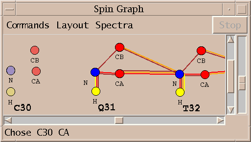
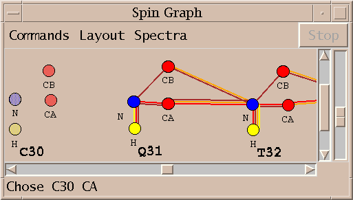
This extension helps you make protein resonance assignments using spin graphs. A spin graph is a diagram showing atoms as dots and assigned peaks as lines between the atoms. You can click on an atom and a list of possible chemical shifts is shown. Under each candidate chemical shift is a group of peaks from different spectra which support the proposed assignment. The suggested chemical shifts for the selected atom are ordered to put the most probable assignment at the top. The ordering is based on the total number of peaks consistent with the proposed assignment. Each resonance assignment line also shows the number of standard deviations of this chemical shift from the average shift for this atom and residue type using statistics from BioMagResBank. The peak assignment lines show the deviation in ppm from the resonance position for each spectrum axis, the signal to noise at the peak position, and the current assignment for the picked peak. For assignments with no matching picked peak the shift deviations and current assignment are left blank. You can select a resonance assignment line from the list and press the Assign button to make all the associated peak assignments. You can click on atoms which already have an assignment and press the Unassign button to remove all associated peak assignments and then examine alternatives. As you assign and unassign resonances the spin graph lines are updated to display the assigned peaks. This extension uses peaks that you have already picked in the spectra. It does not find new peaks that have not been picked.
The Setup button on the assignment graph dialog brings up a window for choosing the spectra to use, what peaks to look for, and chemical shift tolerances. Currently the following spectra for use in protein assignment are supported: n15hsqc, hnco, hncaco, hnca, hncoca, hncacb, cbcaconh, hnha, haconh, cconh, c13hsqc, hcchtocsy, c13noesy, n15noesy. When you first show the setup dialog the type of each of your spectra is guessed from its Sparky name. The spectrum type names are shorthand for a specific set of expected peaks encoded in the expectedpeaks.py file that comes with Sparky. For example, n15hsqc is shorthand for peaks with assignments "H N". This means for each residue there is a peak for the backbone amide proton and nitrogen. Note that this description of expected peaks does not include sidechain peaks seen in an N15 HSQC. This means the assignment graph tool will not use such peaks when proposing assignments. As another example, hnco is shorthand for expected peaks "H N C-1". The -1 means the C assignment is for the preceding residue. As you can see these expected peak patterns are specific to proteins. Separate patterns for expected peaks are needed for DNA or RNA and these are not yet available. In addition to specifying the expected peaks for the spectra you wish to use it is necessary in some cases to specify the "axis order". This means telling how the axes of your spectrum correspond to those of the expected peak assignments. This can be inferred in most cases by just matching the types of the nuclei. In some cases, for example, in an HNHA spectrum there are two proton axes that are different. The hnha expected peaks are described in the expectedpeaks.py file as "H N HA" and "H N HA-1". So the amide proton comes first. If your HNHA spectrum has the alpha proton on axis w1, the nitrogen on axis w2, and the amide proton on axis w3 you will want to use the axis order menu in the setup dialog to specify that the "H N HA" axis order is w3, w2, w1. After you press Ok on the setup dialog a spin graph window will appear showing the existing assignments.
Here are details of the algorithm that produces the proposed resonance assignments and lists of supporting peak assignments. When you click on an atom in the spin graph display all expected peaks (from the spectra chosen in the setup dialog) involving that atom are considered. For example if the atom selected is a protein backbone CA and an HNCA spectrum is being used then an intra-residue peak connecting the CA to the amide H and N of the same residue is expected and an inter-residue peak connecting the next residue's amide H and N to this CA is expected. For each expected peak a check is made to see if any of the resonances have been assigned. If any is assigned then all picked peaks in the spectrum consistent with those resonances (using the tolerances set in the setup dialog) are considered. Each such peak gives a possible chemical shift value for the CA you are trying to assign. At this point we have a list of peaks connecting already assigned resonances to the CA resonance you want to assign. Each peak suggests a chemical shift for the CA. For each of these possible CA shifts, the peaks that agree with the shift to within the setup dialog tolerances are collected. These are the possible resonance assignments and sets of supporting peak assignments that are displayed.
Since resonance assignments are only proposed using peaks that connect to already assigned resonances you must have at least one already assigned resonance to get started. To start I suggest choosing an HSQC peak and assigning it with the standard assignment dialog (at) to an arbitrary place along the sequence. It is best to put it not too close to prolines or glycines so that you will be able to extend your assignments without running into these difficult residues. After you have extended to assign a few residues you can reposition the assignments using chemical shift statistics with the sequence repositioning tool (rs).
To make all peak assignments for a proposed resonance assignment you select the resonance assignment line (the top line of the group) and press the Assign button. Some peaks in the group may already be assigned. These preexisting assignments are shown in the last column. These peaks will not be reassigned when you select a resonance assignment line and press the Assign button. You can reassign the individual peaks by clicking on individual peak lines and pressing the Assign button. Or you can first unassign them by selecting the peak line and pressing the Unassign button. When you click on a spin graph atom that is already assigned you are shown just one group of peaks consistent with the current assignment. If you wish to see a list of alternative resonance assignments you need to unassign the resonance and then click on the atom again. (I should change this so that you see the alternatives in this case. The case of clicking on an already assigned resonance is handled differently because I want to show assignments that have been made that are outside of tolerances. This would be better handled by just putting the current assignment group at the top and include all existing assignments in it.)
When you assign and unassign peaks or groups of peaks with the Assign and Unassign button the spin graph lines are updated but the text window is not. (I don't update the text window because then all the alternative assignments disappear. This related to the last comment of the previous paragraph.) If you assign or unassign peaks by other means such as the standard assignment dialog (at) or using the unassign peak command aD, then neither the spin graph display or text is updated. Pressing the Update button on the assignment graph dialog will update the spin graph to reflect the current assignments. When you pick new peaks or delete peaks you also need to press the Update button so that the new peak lists are used for proposing assignments.
Pressing the Strips button at the bottom of the assignment graph dialog shows strips helpful for assigning the most recently selected spin graph atom. The strips are shown in a strip plot window. 3D spectra chosen in the assignment graph setup dialog that contain peaks connecting the currently selected resonance to two already assigned resonances are shown. The selected resonance is put on the vertical strip axis.

Show thin strips from 3D spectra side by side (sp).
The strip plot window (command sp) is used for displaying narrow 2D portions of 3D spectra. It can display many strips of one or more spectra. and can search for strips having peaks with shifts matching selected peaks. There are many possible uses. For example, the HNCACB strip for each residue of a protein can be displayed with the amide proton on the x-axis, the alpha and beta carbons shifts on the y-axis, and the amide nitrogen on the z-axis (ie determining which plane is viewed). This spectrum correlates amide proton and nitrogen with intra and preceding residue CA and CB atoms. Every pair of strips from adjacent residues should show CA and CB peaks with matching y positions. So a walk down a protein backbone is displayed. Since only 20 or so strips will fit on the screen, there is a horizontal scrollbar to shift through strips. You can find strips with peaks having y positions matching selected peaks. So you can produce a walk down a protein backbone by starting with one HNCACB strip. Select the intra CA and CB peaks and invoke a command to find strips with peaks with matching y positions. This will find the amide strip for the next residue (recall each strip shows intra and preceding CA and CB). Then you can select the CA and CB for the new strip and find the next residue. In practice this will probably not work because peaks will be missing due to the low sensitivity of the HNCACB experiment. To accomodate this you can display strips for both HNCACB and CBCACONH. The latter spectrum shows only peaks from amide H and N to preceding residue CA and CB and may have better signal to noise. You can request that the strip plot window display strips for both spectra and you can search for matching strips in the CBCACONH spectrum. Besides backbone assignment using triple resonance spectra strip plots are also useful for side chain assignments. For instance starting with once strip of an HCCH-TOCSY (correlating attached proton and carbon to all other protons connected by chains of carbons) with the xy axes being the two proton axes you can select all peaks in the strip and find all other strips that match a large subset of those peaks. This can produce a collection of all strips for a sidechain spin system. Strip plots are also useful for making assignments in N15 and C13 editted NOESY spectra. To read more about how to take advantage of strip plots see: Journal of Biomolecular NMR, 5 (1995), 1-10 where Christian Bartels, Tai-he Xia, Martin Bileter, Peter Guntert, Kurt Wutrich describe their strip plot program XEASY. The Sparky strip plot extension was based on that paper.
To display strips show the strip plot window with the sp command and choose "Select strip spectra... (ss)" under the Show menu. This displays a dialog listing the currently loaded 3D spectra. You click the checkbuttons next to the spectra you want to display strips for. You need to select which spectrum axes will be the x (horizontal), y (vertical) and z (plane) axes for each spectrum you will display strips for. Press the Apply or Ok button to have your choices take effect. Now you can select a peak and use the add selected peak strips command sk to show strips corresponding to the peak position for all of the chosen spectra. The strips are displayed in the same order that the spectra were chosen. Additionally each strip label has a border whose color matches the color of the checkbutton for that spectrum. A spectrum strip is only displayed if the x and z axes can be matched with corresponding axes of the spectrum the peak comes from. The peak must have a single axis with matching nucleus. (Note: This should be generalized to use the matching rules used by view centering that fallback on matching corresponding axis numbers.) The sk command adds strips at the end of the current set of strips. To delete individual strips type the Delete Strip command sd in the strip to be deleted. The sD command deletes all strips.
To display strips for all assigned peaks use the All Assigned Strips command sn. All x-axis and z-axis assignments are found for all chosen spectra and strips are displayed at these positions, ordered by residue number. The Goto Assigned Peak Strip command sj (under the Find menu) can then be used to scroll to the first strip whose assignment matches that of the selected peak.

To find all strips in a spectrum with peaks matching the y positions of currently selected peaks use the add strips matching peaks command sm. The search is done in the spectrum you typed the sm command in. Typically you pick one or two peaks in one strip and then wish to find strips in a different spectrum. To change the input focus to the spectrum in which you want to find matching strips without deselecting your peaks you can hold the shift key while clicking in the desired spectrum window. The peaks of the spectrum are clustered into strips using ppm ranges for each nucleus type. These ranges are specified in the Strip Matching Parameters (sT) dialog. Then each strip has its peak y positions compared to the y positions of the selected peaks. A strip peak matches the y position of one of the selected peaks if it is within the range for that nucleus type. You can show only strips that have peaks matching every selected peak, or you can allow some number of selected peaks to have no match. The allowable number of mismatched peaks is also set in the Strip Matching Parameters dialog. The displayed matching strips are ordered by how good the match is measured as the sum of the absolute y position errors. An unmatched position counts as an error equal to the ppm range in this score. Many matching strips can be found. They are appended to the current set of strips. To delete all the matching strips found by the most recent sm command use the Delete Matched Strips command sM.
Each strip is a view window that can be manipulated like all other spectrum view windows. For instance the contour scale can be displayed (vC) and contour levels adjusted. To apply changes made to one strip to all other strips of the same spectrum use the copy view strip options command sv in the strip whose settings you want to propagate. This copies the contour levels, ppm scale, visible depth, crosshair settings, and which types of ornaments are shown (grids, peaks, labels, lines). To zoom all strips in or out use the strip zoom in (si) and strip zoom out (so) commands.
Set integration error estimates using specified criteria (ve).
Integrated peaks have a volume and volume error associated with them. The seldom used volume error is intended to estimate errors in integration arising from poor fitting, offset baselines, other spectrum processing artifacts, overlap with other peaks, .... It can be output as a column in peak lists for use by programs which compute distance bounds from NOESY peak intensities. The volume error is not set automatically when peak integration is performed. Peak fitting produces a "fit residual" which can be displayed as a separate column in peak lists. The ve command allows you to set volume errors for all integrated peaks based on a few criteria. There are default percent error values for fitting and for box/ellipse methods, there is a penalty for being near the spectrum diagonal, and there are penalties for being overlapped with smaller, bigger, and comparable volume peaks. All error values are expressed as a percent of total volume.
Output a distance restraint list for NOESY peaks in XPLOR format (xf).
The XPLOR format dialog shows you a restraint list that you can write to a file. Only assigned peaks are listed. The Sparky assignment atom names are used with no translation to make names XPLOR will recognize.
assign (residue 4 and name h1') (residue 5 and name h8) 3 .4 2
In the above example restraint line the numbers at the end are the restraint bounds. The meaning of these values depends on what type of restraint function you use in your XPLOR calculation. The above 3 parameters could mean a lower distance restraint of 2.6 (= 3 - .4) angstroms and an upper bound of 5 (= 3 + 2) angstroms. This dialog puts the same bounds parameters exactly as you specify them at the end of every restraint line. Typically you will use a few restraint categories classifying the peaks as weak, medium, or strong. The different categories will have different bounds parameters. You can build up the restraint list by entering the peak height range for the weak peaks, enter the appropriate bounds text, press the Update button, and write the results to a file. Then set the height range for medium peaks, enter the bounds parameters for medium peaks, press Update, and append the results to the file. You do the same for strong peaks, appending these to the file. Volumes can be used to classify peak strength instead of peak heights if you have integrated peaks. Or if you have placed a note on each peak like w, m, s, you can filter to list each category separately. Peak notes can optionally be shown on the line following each peak. You can filter out peaks whose notes contain any word from a specified list of space separated words (for example "overlapped"). This option provides no way to filter based on a phrase containing spaces.
Here is how to modify a Sparky extension to do something new. Copy the Python code for the extension (standard extensions are in /usr/local/sparky/python/sparky) to a directory named Python under your home Sparky directory. Sparky looks first in this personal Python directory when you ask it to load Python code. If you want to use both the original and customized versions rename the file. Now look through the Python code and modify it as desired. Python is a very clean language so even if you don't know it you can probably figure out many of its features just by looking at some code. There are several books on Python and there is online documentation. Python is a general purpose language. The way Sparky data is represented in Python and how you can use the Sparky user interface are described in python/README.
To use a modified Sparky extension (in file mycode.py) bring up the Python shell window in Sparky (py) and type the command:
import mycode
You can have your extension loaded every time you start Sparky by adding the above import command to a file called sparky_init.py in your Python directory. You will probably want to add a menu entry and accelerator to invoke the extension. You can do this by adding a line to the end of the Python code like:
sparky.add_command('sg',
'Spin graph (sg)',
'spingraph.show_spin_graph()')
This adds an accelerator and extension menu item that execute the specified Python command.
If your modifications to the Python code generate an error, Python will print an error message including a trace indicating where the problem is. Sparky should never crash because of incorrect Python code. The error message will appear in the Python shell window (py). You can modify the code and then reload it with the command:
reload(mycode)
You have to use this reload command instead of import because import does not reread the file.
The Python classes defined by Sparky are documented in the Sparky distribution file /usr/local/sparky/python/README You can look at the extensions in the distribution directory python/sparky for examples of Sparky extensions. A good way to learn Python is take an existing extension that does something similar to what you want and modify it. Here is an example of a Sparky extension.
def write_peak_list(peak_list, path) :
file = open(path, 'w')
for peak in peak_list:
if peak.assignment != None and peak.volume != None:
line = "%15s %9.0f\n" % (peak.assignment, peak.volume)
file.write(line)
file.close()
The function write_peak_list() is defined. It takes two arguments, the first is a list of peaks and the second is the name of a file to write a peak list to. The first line opens the file for writing. The second line starts a loop where the variable "peak" will be set to each peak in "peak_list" in succession. The "if" statement checks that the peak has an assignment and a volume. If it does the variable "line" is set to a string containing the assignment and the volume. The next line writes the string to the file. When the loop is finished the file is closed.
The bold words are defined by the Python language. The words "volume" and "assignment" are defined by Sparky. The other words are variables names I chose. The format of the string uses the C language format specifiers. The assignment name is placed in a field 15 characters long, then there is a space, and the volume with zero digits after the decimal place in a field 9 characters long followed by a newline character. To get more detail on these format specifiers try "man printf(3)" on a unix computer, or look for printf documentation on the web.
To use this function in Sparky you do the following. First put the code in a file called "writepeaks.py" in the directory where you started Sparky. Open some Sparky data with integrated peaks. Then bring up the Python interpretter in Sparky with Extensions/Python Shell (accelerator py) and type:
>>> import writepeaks >>> session = sparky.session_list[0] >>> peaks = session.selected_spectrum().peak_list() >>> writepeaks.write_peak_list(peaks, "mypeaks")
The ">>>" is the Python prompt. The first line loads your function. The second line gets the Sparky session object which gives you access to your currently opened data. The third line calls Sparky defined functions to get the currently selected spectrum and produce a list of all that spectrum's peaks. The fourth line writes the peaks to a file called "mypeaks" in the directory Sparky was started in using the write_peak_list() routine.
That's alot of typing to produce a list of peaks. You could much more simply produce this list by bringing up a peak list (lt) and saving it to a file with the Save button. But if you needed to precisely control the format of the list so that it could be used as input to another program it might be worth writing the above Python function with exactly the right format specifier. If you were going to use this more than once it you could make it callable with a keyboard accelerator like all other Sparky commands. I'd write a slightly different function for this purpose.
def write_spectrum_peaks(session) :
spectrum = session.selected_spectrum()
if spectrum != None:
peak_list = spectrum.peak_list()
file = open(spectrum.name + ".peaks", 'w')
for peak in peak_list:
if peak.assignment != None and peak.volume != None:
line = "%15s %9.0f\n" % (peak.assignment, peak.volume)
file.write(line)
file.close()
This version of the function takes the peaks from the currently selected spectrum and writes them to a file whose name is the spectrum name with a ".peaks" suffix in the directory where Sparky was started. To have this function called when I type "wp" in a view window I'd put the above code in ~/Sparky/Python/writepeaks.py and put the following lines in the file "~/Sparky/Python/sparky_init.py".
def initialize_session(session):
def wp_command(s = session):
import writepeaks
writepeaks.write_spectrum_peaks(s)
session.add_command("wp", "Write spectrum peaks (wp)", wp_command)
When you start Sparky this initialize_session() function is called and will add a menu entry to the Extension menu with accelerator wp that invokes the write_spectrum_peaks function. Sparky does not detect when you have changed this file. So you will have to restart Sparky after creating or modifying sparky_init.py.
There are more examples of Python extensions to Sparky in the directory /usr/local/sparky/python/sparky. Copying example code and modifying it to suit your needs is an easy way to learn the Python language. You can also learn how Sparky data (peaks, spectra, ...) is represented in Python from example. A more direct way is to look at the file python/README distributed with Sparky. This file defines peaks, spectra, ..., and all the functions for getting data from Sparky and manipulating the Sparky user interface.
For more on Python look at the excellent tutorial, or for a crash course, the quick reference. For more details see the language manual, and library manual. To get the latest version of the Python language, about all kinds of optional packages, etc ..., go to Python's home http://www.python.org
Below I describe how Sparky can be used with AutoAssign to assign the backbone of a small protein, BPTI. This was presented as a poster at the "Computational Aspects of Biomolecular NMR" conference in Pisa in June 1999. Details of how to obtain AutoAssign and use it with Sparky appear in the Extensions section of the Sparky manual.
Software to automate resonance assignment of proteins has not been widely adopted. Such programs can significantly reduce the time required for assignment, a tedious and time consuming step in NMR studies of protein structure and dynamics. A difficult aspect of automated methods is assimilating the results. It is necessary to check the assignment for errors and omissions. A second impediment is that current programs deduce assignments from lists of peak positions. They have difficulty achieving results as complete as hand assignment because they do not have direct access to the spectra. To address these limitations I have united a graphical manual assignment program, Sparky, and an automated protein backbone assignment code called AutoAssign. The key new feature of this system is a diagram called a spin graph. A spin graph represents atoms as dots and assigned peaks as lines connecting the dots. It provides an intuitive and detailed display of generated assignments. The tight integration of Sparky and AutoAssign allows a cycle of revising peak lists and computing assignments to be done in tens of seconds. The spectroscopist adds and deletes peaks based on flaws in the previously computed assignments and direct examination of contoured spectra. Tests of the Sparky / AutoAssign software on 58 residue Basic Pancreatic Trypsin Inhibitor (BPTI) protein suggest that this combination of tools may offer substantial time savings for protein backbone assignment. This approach is expected to result in assignments that are as complete as those obtained with traditional methods. Application to more realisitic protein systems is necessary to better assess the usefulness of this software.
The following is a walk through of the backbone assignment process for the 58 residue protein BPTI using the Sparky and AutoAssign programs.
I start with 8 processed spectra, a 2D N15 HSQC, and 7 triple resonance spectra: HNCO, HNCA, CA(CO)NH, HNCACB, CBCA(CO)NH, HNHA, HA(CO)NH. This is the preferred set of spectra for running AutoAssign. It is possible to work with fewer spectra, omitting the HNCO and the two HA spectra. The spectra can be processed with Bruker software, Varian's VNMR, NMRPipe from the NIH, or Felix.
The first step is to align the spectra. This is done by shifting the spectrum ppm scales so that corresponding peaks in the spectra are aligned. This is necessary when the referencing information used in processing the spectra is not consistent. You use the Sparky spectrum tool (accerlator st) to enter shifts for individual spectrum axes. I do this by first shifting the H and N axes of the triple resonance spectra so that their peak line up with the HSQC peaks. Then I shift the CA axes so that peaks in CA strips line up. Then I adjust the HA axes. To determine the numerical shifts in ppm I find corresponding strong peaks in two spectra, pick them, and take the difference of their chemical shift positions as shown in peak lists (accerator lt). For aligning the H and N axes of the triple resonance spectra with the HSQC it is helpful to project the 3D spectra onto the HN plane. You can create a 2D projected spectrum with the ucsfdata program using a command like:
% ucsfdata -s1 256 -r -o hnca2hn.ucsf hnca.ucsf
This command projects the along the CA axis of the HNCA spectrum, in this case it is axis w1 having 256 data points. Executing ucsfdata without any arguments will give a summary of the options. The alignment of the ppm axes described above does not establish absolute ppm scales. You need a reference peak of known chemical shift to do this. It is desirable to establish absolute referencing because AutoAssign and some Sparky tools use chemical shift statistics to help guess assignments.

Above is shown the N15 HSQC spectrum. I interactively adjust contour levels and pick peaks above a specified threshold and minimum linewidths. For the triple resonance spectra I pick peaks that are sufficiently close in the amide H and N dimensions to picked HSQC peaks. This is done with the restricted peak picking extension (accerator kr). Limitting the picked region of the 3D spectra allows me to use lower thresholds while keeping the number of noise and artifact peaks small. This process produces a total of about 750 peaks in 30 minutes. Most of the time is spent adjusting thresholds and repicking to obtain approximately the expected number of peaks.
Next I run AutoAssign to generate backbone assignments. AutoAssign was created by Gaetano Montelione's group at Rutgers and is described in a paper "Automated Analysis of Protein NMR Assignments Using Methods from Artificial Intelligence", J. Mol. Biol. (1997) 269, 592-610. It has a user interface which displays text lists of assignment information and scatter plots. I don't make use of this interface. Instead, I treat the program as a black box invoked by the dialog shown above. The picked peaks and a set of chemical shift tolerances are the only inputs. The program runs for about 5 seconds and generates backbone resonance assignments. Peak assignments are automatically inferred from the resonance assignments and displayed.
Peak assignments are displayed as a spin graph. This is the novel element of the software I am describing and much of what follows will describe how it is used to arrive at a final set of resonances assignments.

A spin graph shows atoms as dots connected by lines which represent assigned peaks. The above picture shows the amide H, N and CA atoms of glycine residue 28 of BPTI. The line connecting the amide proton and nitrogen represents an assigned HSQC peak.
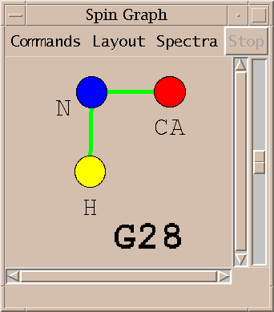An assigned peak in a 3D spectra is shown as two lines. The example above shows an HNCA peak connecting the amide proton and nitrogen to the alpha carbon.
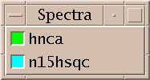The color of the line indicates which spectrum the assigned peak comes from.

Peaks from multiple spectra can be shown in the same diagram.
| 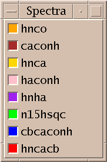 | 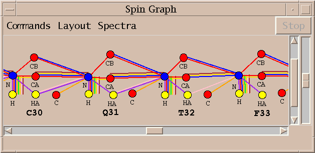 |
The above spin graph shows the BPTI assignments generated by running AutoAssign. The 58 residues of BPTI are layed out in a single row and you can scroll from one end to the other. Only the assignable backbone atoms are shown. The 8 different line colors indicate peak assignments from the 8 spectra.
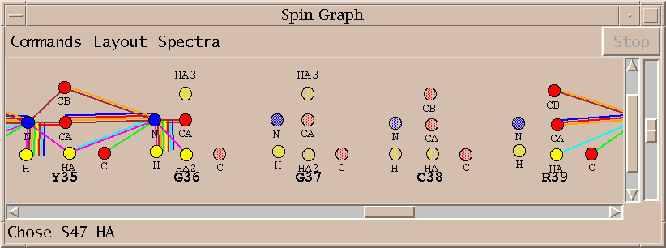No assignments are made for some residues. Sometimes this is because a small stretch of residues is bounded by prolines. In other cases the peaks needed for assignment are below the spectrum noise level. About 75% of the backbone resonances are assigned without any modifications to the automatically picked peak lists. A few residues are given incorrect assignments. About half the unassigned resonances cannot be assigned using the available spectra.

The spin graph above shows that no assignments were made for proline 13 and the assignments for cysteine 14 and lysine 15 are incomplete. I investigate this problem by starting with the lysine 15 alpha and beta carbon resonances and directly examining the spectra to verify the lysine 15 assignments.
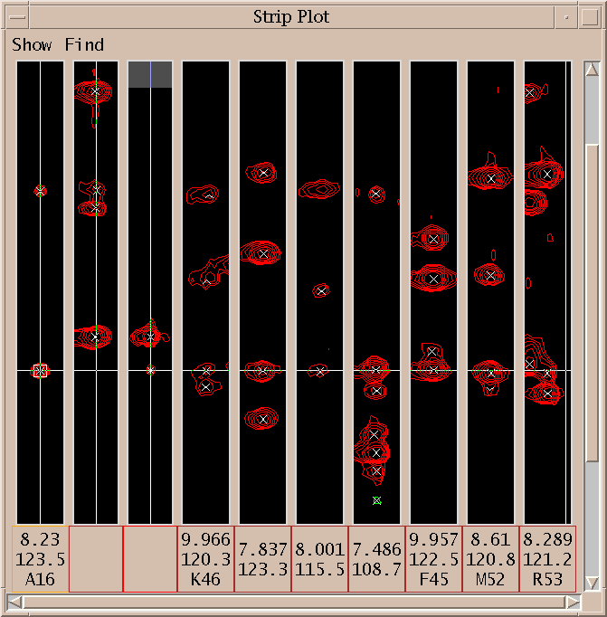I first display the peaks connecting the solidly assigned A16 residue to the CA and CB of K15. The first 3 strips show the CBCACONH, HNCACB and HNCA spectra for alanine 16. Next I selected the CA peak shown with the square box around it in the first strip, and request all HNCACB strips with a peak having matching carbon shift. The seven rightmost strips are displayed. The strip with amide H shift 8.001 and N shift 115.5 has a peak matching the CB peak of alanine 16 but it has not been picked.
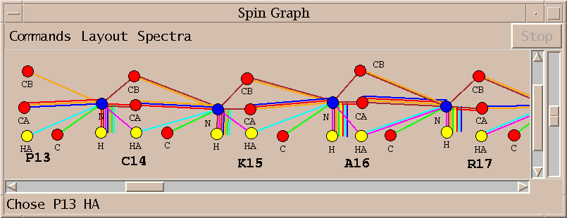I pick the unmarked peak identified with the strip plots above and rerun AutoAssign. The new assignments are displayed in about 15 seconds. The one additional peak allows AutoAssign to correctly assign residues P13 through K15.
Three additional locations along the BPTI backbone require direct inspection of the spectra similar to what was illustrated above to improve peak lists. After fixing those problems a few gaps remain in the assignments.
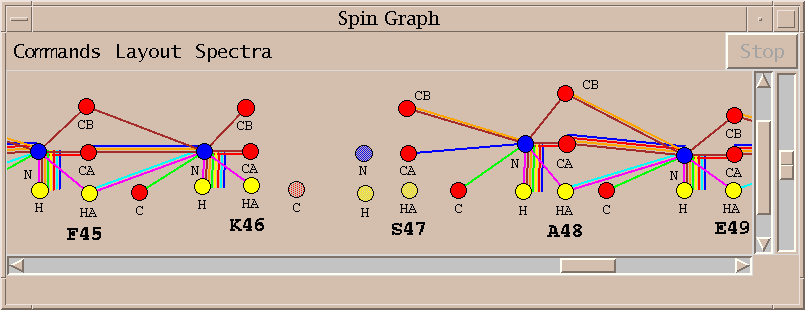The spin graph above shows a gap between residues K46 and S47.
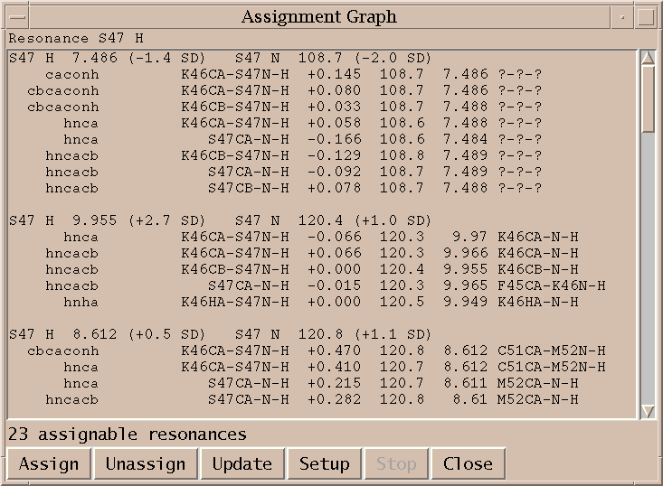I click on the spin graph S47 H atom and the above list of plausible assignments is displayed. Three groups of assignments are shown. The top line of each group lists a proposed resononance assignment and the subsequent lines show peak assignments consistent with the resonance assignment. The groups are ordered by the number of supporting peak assignments.

I select the top line of the proposed assignments in the above list and press Assign. I similarly assign S47 HA and K46 C getting the assignments shown in the spin graph above. Why didn't AutoAssign make these assignments? I don't know. The algorithm is sufficiently complex that it is difficult to explain all of its behavior. It is important that the program can be treated as a black box and tools are available to complete assignments by hand.
Combining graphical tools supporting traditional assignment methods that make direct use of spectra with automated assignment software lets the NMR spectroscopist focus on difficult to assign residues. Spin graph display of automatic assignment results is an effective means of locating the difficult to assign residues. The Sparky / AutoAssign combination will need to be tested on more realistic data sets to assess the time savings resulting from this approach. I would like to provide Sparky interfaces to other automatic assignment programs for both protein backbone and side chain assignments.
Sparky is distributed for Windows, Linux, SGI, Sun, and DEC platforms:
http://www.cgl.ucsf.edu/home/sparky
AutoAssign is distributed for SGI and Linux:
http://www-nmr.cabm.rutgers.edu/software
Computer Graphics Laboratory, UC San Francisco Tom Goddard (that's me) - Sparky development Tom Ferrin - director of lab Magnetic Resonance Laboratory, UC San Francisco Members of Tom James' NMR group guide Sparky development Protein NMR Spectroscopy Lab, Rutgers University Ying Xiong - processing BPTI spectra Hunter Moseley - AutoAssign development Gaetano Montelione - director of lab
You can change the font size and style used for buttons, labels, menus, peak lists, ... by adding some lines to your ~/.Xdefaults file. The fonts you specify override the defaults specifed in the Sparky option database /usr/local/sparky/lib/Sparky. You can look in that file for other options you may want to override. The lines to specify fonts that you add to your .Xdefaults files should look like:
sparky.normalFont: -family lucida -size 12 sparky.fixedWidthFont: -family lucidatypewriter -size 12
You should then execute the command "xrdb -merge ~/.Xdefaults" so that the X server reloads the .Xdefaults file, and then restart Sparky. You will not need to run the xrdb command in the future. Every time you log in the .Xdefaults files is read. The font sizes are specified in points (1/72 of an inch). To see what font families and sizes are available you can use the xlsfonts command (if it is available on your system). The fixedWidthFont line should name a font that has a fixed width per character. It is used in peak lists so that columns line up. To adjust the size of assignment labels on contour plots you use the ornament size dialog in Sparky (oz).
Sparky no longer has:
The spectrum window buttons correspond to keyboard accelerators. Zoom in is zi, zoom out is zo, zoom previous is zp, toggle resonance panels is vR, toggle slice panels is vS.
The files in the DB directory are no longer used by Sparky. This means that resonance frequencies are calculated by averaging the positions of assigned peaks in spectra in your project. Peaks in spectra which are not part of your project no longer effect resonance frequencies.
The accelerators for ornament copy and paste have changed from ec and ep to oc and op.
There are no longer separate integration methods for isolated and overlapped peaks. You choose a single integration method from the integration dialog (accelerator it).
The assignment dialog is different from pre-1995 Sparky.
View synchronization is now done with a synchronization dialog. The accelerators ya, yd, and yt all bring up this dialog. You can now synchronize individual axes instead of all corresponding axes between two or more spectra.
If you process your data with NMRPipe you'll need to convert it to UCSF format with the program pipe2ucsf that comes with the Sparky distribution. NMRPipe is a processing program written by Frank Delaglio (delaglio@nih.gov) available from the NMRPipe web page.
Given NMRPipe data noe150.pipe you convert it to UCSF format with:
% pipe2ucsf noe150.pipe noe150.ucsf
This creates the file noe150.ucsf. Only the real component is taken from the NMRPipe file. To see the header of a UCSF format file you can use the ucsfdata program:
% ucsfdata noe150.ucsf axis w1 w2 nucleus 1H 1H matrix size 2048 4096 block size 64 128 upfield ppm -0.888 -0.884 downfield ppm 10.780 10.784 spectral width Hz 7000.350 7000.350 transmitter MHz 599.929 599.929
Make sure that the nucleus type for each axis (1H, 13C, 15N) is correct. If it is not right many Sparky features will not work properly (eg. crosshair synchronization, assignment guessing, ...). You can correct nucleus type names and other header parameters using ucsfdata.
pipe2ucsf [-axisorder] pipefile ucsffile where axisorder is a string of digits (eg. 312)
The pipe2ucsf program will convert 2D, 3D, or 4D data processed with NMRPipe to UCSF format. 3D or 4D nmrpipe data should be in a single file. A spectrum divided into separate files containing 2D planes (with pipe2xyz) cannot be converted by pipe2ucsf. Use xyz2pipe which comes with NMRPipe to convert sets of 2D planes into a single 3D pipe file. For a processed hnco spectrum saved as 2D planes with names hnco001.ft, hnco002.ft, ... the command to produce a single 3D NMRPipe file looks like:
xyz2pipe -in hnco%03d.ft -x > hnco_3D.ft
Refer to the xyz2pipe man page for more details.
You would then apply pipe2ucsf to hnco_3D.ft.
The input and output files for pipe2ucsf must be
explicit files, unix pipes cannot be used.
This is because pipe2ucsf does random access reading and writing of
data which is not possible using stdin (standard input) and stdout
(standard output).
The axis order in the created UCSF spectrum file (ie. which spectrum axis is called w1, which is called w2, ...) can be controlled by the axisorder option. The w1, w2, ... axis names are displayed by Sparky but have no special significance (ie. there is no correct order). Conventionally the highest axis number is the directly detected dimension. Here is an explanation of how pipe2ucsf arrives at its default axis order. To put Bruker or Varian raw spectrometer data into NMRPipe format before processing you use the programs bruk2pipe and var2pipe that come with NMRPipe. The arguments to these commands define the XYZA axes for the data. For a 2D spectrum pipe2ucsf with no axisorder option will name the X and Y axes w2 and w1, for 3D data the XYZ axes become w3, w2, w1, and for 4D data the XYZA axes become w4, w3, w2, w1. This is true even if processing with NMRPipe transposed the axes in the NMRPipe file. To obtain a different order use a command like:
pipe2ucsf -321 pipefile ucsffile
This will reverse the default ordering for a 3-D spectrum. Using -123 gives the default order, -213 swaps the first two axes, etc... For a 2-D spectrum -21 reverses the default axis order.
The pipe2ucsf program determines the byte order of the binary data using a parameter in the file. If you move the processed NMRPipe data to a machine whose native byte order is not the same as the data, and run pipe2ucsf it will recognize that the machine and file byte orders do not match and swap the order to produce a correct UCSF data file.
Data processed with Felix that is in Felix matrix format can be used directly by Sparky. You use the Sparky open command under the file menu. The Felix matrix should contain correct transmitter frequencies, spectral widths, reference points, reference shifts and axis labels for each axis. These are set with the Felix rmx command.
rmx dim freq width type refpt refval text
For example,
rmx 1 600.123 5000.0 0 1 10.35 H1
sets axis 1, with transmitter frequency 600.123 MHz, sweep width of 5000.0 Hz, axis type 0 (this is not used by Sparky), index position 1 has a chemical shift of 10.35 ppm, and this is a proton axis. Axis labels C13 or N15 are used for heteronuclear spectra.
If you process your data with Varian's VNMR you'll need to convert it to UCSF format using the program vnmr2ucsf supplied with Sparky. This program will convert 2D or 3D data.
To convert VNMR processed 2D data in directory exp7 to UCSF format use:
% vnmr2ucsf exp7/procpar exp7/datdir/phasefile exp7.ucsf H H
This creates the file exp7.ucsf using parameters from exp7/procpar and data from exp7/datdir/phasefile. To make sure that VNMR produces the phasefile you need to set trace='f1', display the full spectrum, and use the VNMR flush command. If you don't use the above VNMR commands the phasefile may not be written or may contain just zero values. The above example is for a homonuclear experiment. The H H arguments specify the nucleus types for the f1 and f2 axes. You use C and N for carbon and nitrogen dimensions.
Here is an example that converts processed 3D data.
% vnmr2ucsf extr/procpar3d extr/dataf1f3 hnca.ucsf C N H
Parameters are read from the procpar3d file and data comes from files dataf1f3.* which are 2D planes of the 3D spectrum. The 2D planes dataf1f3.n (where n is the plane number) are created by the VNMR getplane command. See the VNMR command reference manual for how to use getplane. The path to the data files on the vnmr2ucsf command line is specified without the plane number suffix. The vnmr2ucsf program appends the numeric suffixes to read all 2D planes. The final 3 arguments are the nucleus types for the f1, f2 and f3 axes.
Parameters fn, fn1, sfrq, dfrq, dfrq2, dfrq3, tn, dn, dn2, dn3, sw, sw1, rfl, rfl1, rfp, rfp1 from the procpar file are used by the conversion program to determine the size of the data set, transmitter frequencies, sweep widths and ppm scales. For 3D the additional parameters fn2, sw2, rfl2, rfp2 are used.
The vnmr2ucsf program assumes that the phasefile data was written with big endian byte order, the native byte order on Sun Sparc machines on which VNMR is usually run. If you move the phasefile and procpar file to a PC which has little endian byte order, you can run vnmr2ucsf on the PC and the conversion will work correctly.
If you process your data with Bruker's XWinNMR or UXNMR software you can convert it to UCSF format using the program bruk2ucsf supplied with Sparky. This program has not been tested much. Bruker processed data can also be read directly by Sparky. Both the Bruker and UCSF file formats store the data matrix in blocks so that the whole file does not need to be brought into memory. The Bruker blocks are typically large (1Mb) while the UCSF blocks are small (32Kb). Because Sparky is designed to use the small blocks, you might run out of memory if you have many Bruker spectra loaded simultaneously. In this case you should convert the Bruker files to UCSF format with bruk2ucsf.
To convert Bruker processed data 1/pdata/1/2rr to UCSF format use:
% bruk2ucsf 1/pdata/1/2rr noesy150.ucsf
This creates the file noesy150.ucsf using parameters from 1/acqus, 1/acqu2s, 1/pdata/1/procs, and 1/pdata/1/proc2s. There is a separate proc*s and acqu*s file for each spectrum axis. The parameters used from the acqu*s files are NUC1, NUCLEUS and SFO1. The parameters used from the proc*s files are SI, XDIM, SW_p, OFFSET, and BYTORDP. All the parameters needed by Sparky are put in the UCSF file. These include nucleus names for each axis, data size, block size, transmitter frequencies, sweep widths and ppm scales. The path to the Bruker data file should not be a symbolic link since paths to the acqus parameter files like symbolic-link/../../acqus will not be correct.
If the NUC1 or NUCLEUS parameters in the acqu*s files are not set to the correct nucleus (1H, 13C or 15N) for the spectrum axis, then the UCSF file will incorrectly identify the axis nuclei. You can check the UCSF file you get from bruk2ucsf using the ucsfdata command to see that the nucleus types are correct. If they are not correct Sparky will not properly synchronize crosshairs or guess assignments, and other features will not work. The ucsfdata program can be used to correct the nucleus types in the UCSF file.
The bruk2ucsf program determines the byte order of the binary data using the BYTORDP parameter. If you move the processed Bruker data to a machine whose native byte order is not the same as the Bruker data, and run bruk2ucsf on that machine it will still give a correct UCSF data file.
To extract information from a UCSF NMR file you can use the program ucsfdata that comes with Sparky. Invoking ucsfdata with no arguments gives the following message:
Usage: ucsfdata [-w1 i j] [-w2 i j] [-w3 i j] [-w4 i j]
[-p1|-p2|-p3|-p4]
[-s1 r] [-s2 r] [-s3 r] [-s4 r]
[-a1 name] [-a2 name] [-a3 name] [-a4 name]
[-o1 ppm] [-o2 ppm] [-o3 ppm] [-o4 ppm]
[-sw1 Hz] [-sw2 Hz] [-sw3 Hz] [-sw4 Hz]
[-f1 MHz] [-f2 MHz] [-f3 MHz] [-f4 MHz]
[-t negative-threshold positive-threshold]
[-r] [-m] [-l] [-o output-file] input-file
Prints header information for UCSF format NMR data files.
Produces new UCSF data files for subregions, or with data below
specified thresholds zeroed, or with reduced matrix size.
Produces matrix file with no header information.
-wN low-index high-index
specifies subregion for axis N
-pN
project along axis N taking data value of largest magnitude.
-sN cell-size
replace cells by single data value of largest magnitude
-aN axis-nucleus-name
change the nucleus name (eg 1H, 15N, 13C) for axis N
-oN origin-in-ppm
change the chemical shift of the downfield edge of spectrum
-swN spectral-width-in-hz
change the spectral width
-fN spectrometer-frequency-in-MHz
change the spectrometer frequency (eg 600 Mhz for 1H)
-t negative-threshold positive-threshold
zeros all data points below threshold values
-r
reduce dimension by eliminating dimensions with only one plane
-m
outputs the data matrix (last axis varying fastest) to stdout
-l
print long format header info for data processed with Striker
With no -m or -o flag header information is printed to standard output. If the -m flag is present the data matrix is written in binary format as IEEE floats with your machine's native byte order. The matrix is written out with highest axis varying fastest. With the -o flag a new ucsf format file is written. The -w1, -w2, ... flags can be used to specify a subregion. The -s1, -s2, ... flags can be used to have cells replaced with the data value of largest magnitude (reducing the size of the matrix). A data matrix can be projected down one dimension (eg 3D to 2D) by using the -p1, -p2, ... flags. The projected value is the one of largest magnitude. Only one dimension can be projected in a single ucsfdata invocation. If more than one -pN flag is given, the last one is the only one performed. To change the axis labels in the input file header use the -a1, -a2, -a3, -a4 flags. The axis label should be one of 1H, 13C, or 15N. You can change the ppm shift of the downfield spectrum edge (ie change the referencing) with the -o1, -o2, -o3, and -o4 switches. The shift value is specified in ppm. You can change the spectral width for each axis with the -sw1, -sw2, -sw3 and -sw4 flags. You can also change the spectrometer frequency associated with an axis. The correct value depends on the nucleus. For example, for a 600 MHz magnet you should have approximately 600 MHz for a 1H axis, 150 MHz for a 13C axis, or 60 MHz for a 15N axis. The spectral width and spectrometer frequency are used to determine the ppm step between matrix data points. Changing the spectral width or spectrometer freqency keeps the ppm shift at the center of the spectrum the same. The -t flag can be used to zero small data values. The -t option can be used to conserve disk space. The resulting file must be compressed (eg. with gzip) to realize any space savings. Sparky cannot read the compressed file directly so it must be uncompressed before use. The -l flag outputs header information of use only if the data was processed with the obsolete UCSF Striker program.
Use File Open (fo) to open UCSF format NMR data, Felix matrix files, or Sparky spectrum files. File Save (fs) writes the spectrum file for the current view. It does not modify Felix or UCSF NMR data files. If you want to modify a Felix matrix use Felix. You can extract a subregion from a UCSF NMR data file with the program ucsfdata. To save all the spectrum files you are currently working on use Project Save As (ja). In addition to updating all the spectra, a list of the spectra are recorded in a project file. Use Project Open (jo) to open all the spectra listed in a project file. Note that a project file just lists the spectra you are working on. So saving a project under a new name does not make a copy of your peak data. If you want to copy your peak data you need to copy the Sparky spectrum files.
Sparky reads UCSF format NMR data or Felix matrix files. It never creates or modifies NMR data files. The data you produce while using Sparky (peak positions, assignments, volumes, etc...) is saved by Sparky in spectrum files and project files. Spectrum files are usually placed in the ~/Sparky/Save/ directory and contain almost all the data relating to an individual spectrum. Peak positions, assignments, volumes, label positions, and what views you are currently looking at are all saved in these files. Project files are usually placed in the directory ~/Sparky/Projects/. A project file contains a list of spectrum files you are working on. It also contains information pertaining to more than one spectrum such as the list of resonances for each molecule and condition, view synchronizations, and view overlays.
When you save a project file or spectrum file Sparky copies the previous contents of the file to a file with the suffix .BAK. If you accidently save bad data you can recover the previous file contents by copying the .BAK file.
You can have Sparky automatically backup your project every so many minutes. You set this using the preferences dialog under the file menu. Sparky then periodically saves copies of your current unsaved work in files with a .backup suffix. These files will be deleted when you quit Sparky. If Sparky crashes the files are not deleted. When you start Sparky again you will be asked if you want to use the automatic backup files, ignore them, or remove them. If you choose to use them Sparky will load the .backup files. If the auto backup data looks OK you can save your work bringing your files up to date. Sparky will not automatically backup files that you do not own. This is to prevent backup conflicts when you and the owner of the files are both looking at the data with separate Sparky sessions.
Here is a sketchy description of the UCSF NMR data format as used by Sparky. Sparky needs to know the dimension, data matrix size, data values, nucleus types, and parameters to convert data indices to ppm and Hz. The ppm and Hz scales are determined by knowing along each axis the transmitter frequency, spectral width, and ppm value for index 0. Given this information you can write a UCSF NMR data file for input to Sparky. The file format is somewhat complicated. The data matrix is broken down into small arrays so that small regions of the data can be read with few disk accesses.
A UCSF NMR data file is a binary file with a 180 byte header, followed by 128 byte headers for each axis of the spectrum, followed by the spectrum data. All integer and float values in the file have big endian byte order independent of the native byte order for the machine that wrote the file. An int has big endian order if the most significant byte appears first in the file (or at the lowest memory address). Sun Sparc and SGI Rx000 processors are big endian and DEC Alpha and Intel x86 are little endian. If you write a conversion program to produce UCSF format the code should check the native byte order at run time and reverse floats and ints if necessary before writing them out. All float values are in IEEE format. All header bytes not described below should be set to zero.
The 180 byte header contains:
| position | bytes | contents | required value |
|---|---|---|---|
| 0 | 10 | file type | = UCSF NMR (8 character null terminated string) |
| 10 | 1 | dimension of spectrum | |
| 11 | 1 | number of data components | = 1 for real data |
| 13 | 1 | format version number | = 2 for current format |
The first byte in the file is position 0. A complex spectrum has two components. Sparky only reads real data and I will only describe below the layout for real data so set the number of components to 1. Use format version number 2.
For each axis of the spectrum write a 128 byte header of the following form:
| position | bytes | contents |
|---|---|---|
| 0 | 6 | nucleus name (1H, 13C, 15N, 31P, ...) null terminated ASCII |
| 8 | 4 | integer number of data points along this axis |
| 16 | 4 | integer tile size along this axis |
| 20 | 4 | float spectrometer frequency for this nucleus (MHz) |
| 24 | 4 | float spectral width (Hz) |
| 28 | 4 | float center of data (ppm) |
Next comes the spectrum data floating point values. The full data matrix is divided into tiles. Each tile is written to the file as an array with the highest axis varies fastest. If a tile size does not evenly divide the data matrix size then there will be a partial tiles at the edge. Partial tiles are written out as a full tiles with zero values for the region outside the data matrix. The tiles themselves form an array and are written out in sequence with highest axis varying fastest.
Here is a detailed example of how the floating point values are written. Suppose we have a 2D spectrum with matrix that is 1024 by 4096 data points. Each value is a 4 byte IEEE floating point number. So the data takes up 16 MBytes (1024 x 4096 x 4 bytes). Sparky wants to be able to show you a small region of the spectrum without any delay, so the data is stored in small rectangular blocks (tiles). Only the tiles needed to display the region you are viewing need to be read from disk. The size of tiles in UCSF format files is typically 32 Kbytes or 16 Kbytes, although a little bit bigger sizes like 128 Kbytes would be reasonable with current disk drive seek times (circa 1999). The current conversion programs that produce UCSF format divide each axis of the data matrix by 2 in steps until the resulting tile size is less than or equal to 32 Kbytes. For purposes of example I will instead take tiles that are 128 by 256 floating point values. So each one is 128 Kbytes ( = 128 * 256 * 4). Then an 8 = (1024 / 128) by 16 = (4096 / 256) grid of tiles covers the 1024 by 4096 data matrix. Denote a point in the data matrix like (312,1587) and a tile {2,5}. Call the two axes w1 and w2. Tile {0,0} includes a rectangle of data values from 0 to 127 along axis w1, and 0 to 255 along axis w2. Tile {a,b} is the data rectangle a*128 to (a+1)*128 - 1 along axis w1 and b*256 to (b+1)*256 - 1 along axis w2.
You write the tiles in the following order.
{0,0}
{0,1}
{0,2}
.
.
{0,7}
{1,0}
{1,1}
{1,2}
.
.
{1,7}
.
.
.
{15,0}
{15,1}
{15,2}
.
.
{15,7}
This order is what was meant above by the phrase "highest axis varies fastest". In this case the w2 axis varies fastest. Each tile is output with the same rule. Tile {0,0} has its 128 by 256 floating point values output in the following order:
(0,0) (0,1) (0,2) . . (0,255) (1,0) (1,1) (1,2) . . (1,255) . . . (127,0) (127,1) (127,2) . . (127,255)
For 3D data the tiles are 3D data cubes. The order of writing the grid of tiles out has the w3 axis varying fastest, w2 second fastest, and w1 slowest. Likewise each tile's cube of floating point values are written out in order having the w3 axis vary fastest, w2 second fastest, and w1 slowest.
last revised February 18, 2004
Sparky is a graphical program for doing NMR assignment and integration. It runs under Microsoft Windows, Linux, Mac OS X, and SGI, Sun, and HP/Tru64 flavors of Unix. The latest version is available at http://www.cgl.ucsf.edu/home/sparky and is free for both academic and commercial users. To help us obtain grant money for further Sparky development we request that you register on the Sparky web site if you have used the program more than ten times. This helps show that Sparky is valuable to the NMR community.
The standard installation directory is c:\Program Files\sparky, but it can be installed in any directory you like. Unzip the sparky-win32.zip in "c:\Program Files". Get the shareware program WinZip 6.2 from the Sparky web site if you do not have an unzip utility.
You can start Sparky by clicking on the "sparky" icon in folder c:\Program Files\sparky\bin. You can create a shortcut to sparky by selecting the icon and then choosing "Create Shortcut" under the folder File menu. Then you can move this shortcut icon to the desktop or some other more convenient place.
The Windows version is compiled using Windows XP. I do not know which earlier versions of Windows (95/98/NT/2000/ME) it will run on.
On some Windows 95 and Windows 98 systems starting Sparky fails with the error message "Out of environment space" and complaints about not being able to find the Tcl/Tk libraries. This happens because Windows limits the total number of environment variables. The Sparky start up script needs to set a few variables to specify where Sparky is installed and where the Tcl/Tk libraries are. Because the limit has been reached Windows does not allow the variables to be set and startup fails. The solution is to right click on the sparky.bat icon in the c:\Program Files\sparky\bin directory, select "Properties" and under the "Memory" tab adjust the parameter called "initial environment". It is by default set to "auto" and you should choose some number instead. I don't know how big the number has to be -- just experiment or choose the biggest value in the pull down menu of choices. Then Sparky will start without problems. This solution was reported to me by a Sparky user. I have not been able to test it because I have only Windows NT available and it does not exhibit this problem.
You may wish to examine platform specific installation notes for Linux or SGI.
The standard installation directory is /usr/local/sparky, but you can install it in any directory you like. Unpack the sparky-xxx.tar.gz file as follows.
% cd /usr/local % tar zxf /tmp/sparky-xxx.tar.gz
Some versions of tar do not recognize the "z" option to uncompress. In that case use:
% gunzip -c /tmp/sparky-xxx.tar.gz | tar xf -
You can start Sparky by running /usr/local/sparky/bin/sparky. You may want to add /usr/local/sparky/bin to your executable search path in your shell startup file (for example in .cshrc).
The Linux version requires C version 6 runtime library. You can see whether you have this by looking for /lib/libc.so.6 on your system. Linux distributions from about 1998 until 2004 (time of this writing) are based on libc6. I don't distribute a version that runs with older libc5 libraries because I don't have a Linux machine with older libraries to compile on.
The IRIX 6.5 version contains n32 binaries. It will not run on earlier versions of SGIs IRIX operating system (eg 5.3).
Unpack the sparky-mac10.2.dmg file by double clicking on it. You can move the Sparky application to any folder you like. You need to start an X server before running Sparky.
The Mac version of Sparky requires that you run an X server. Apple includes an X server with Mac OS 10.3 but it is an optional installation. It is also available on Apple's web site. It is installed in /Applications/Utilities/X11. On Mac OS 10.2 you can use the XFree86 X server. An installer for the Mac is available from the XonX project.
If you wish to start Sparky from the command-line instead of clicking on the icon use the executable
Sparky.app/Contents/Resources/bin/sparky
The manual is found in
Sparky.app/Contents/Resources/manual/index.html
Bouncing Dock icon. The Sparky icon will continue to bounce in the Dock for about a minute after Sparky has been started. One way to avoid this visual annoyance is to turn off bouncing icons by switching off "Animate opening applications" in Dock preferences (under the Apple menu). This behaviour results from Sparky being an X windows application instead of a native Aqua application.
Delete key on Mac. The delete key on some Macs produces a backspace character when using an X windows program. But if you hold the Fn key when pressing Delete you will get a real delete character. So Fn-Delete should delete selected Sparky peaks.
Clicking to activate windows. Two X windows preference settings help avoid extra mouse clicks when using Sparky dialogs. When you move the mouse from one Sparky window to another you can automatically have the new window activated without requiring a mouse click. Set this "focus follows mouse" preference by typing the following command in a Mac Terminal window.
% defaults write com.apple.x11 wm_ffm -bool true
The default behaviour of the Quartz window manager from the Apple X server 1.0 release is to require you to click on each window before you can type to it or press buttons. The wm_ffm setting only effects X applications, not Aqua applications, so it only has an effect when an X window currently is active and you move the mouse to another X window.
When you are using a native Mac application (not X windows) and then click on a menu within the Sparky window the mouse click does not bring up the menu. It just activates the Sparky window and another mouse click is needed to show the menu. To make this work with a single mouse click use the Mac X server wm_click_through preference by typing the following command in a Mac Terminal window.
% defaults write com.apple.x11 wm_click_through -bool true
Normally Mac OS swallows window activating mouse events. This preference causes a window activating mouse click on an X window to also be processed by the application.
You have to restart the X server after changing the wm_ffm or wm_click_through preference. These preferences are saved in your ~/Library/Preferences directory so they will apply in all future sessions. Change "true" to "false" in the above commands to return to the default preference settings.
Many advanced Sparky features are written in the Python programming language. They are described in the Extensions section of the manual, and appear under the Sparky Extensions menu. Python is included with Sparky 3.110 (Feb 2004) and later.
The Windows, Linux, and unix distributions include the following files in a directory called sparky. On Mac OS X these same files appear in Sparky.app/Contents/Resources.
README - reminder of where web site and manual are
LICENSE - contains copyright, license and disclaimer
manual
index.html - start of HTML manual
intro.html - introduction to basic commands
install.html - this file
changelog.html - list of changes version by version
*.html - other sections of manual
manual.html - manual in a single file
manual-postscript - Postscript version of manual
example - sample data
bin
sparky - a script that starts Sparky
sparky-no-python - the executable for running without Python
pipe2ucsf - conversion from NMRPipe format to Sparky format
ucsfdata - prints UCSF NMR data header, extracts data matrix
vnmr2ucsf - conversion from Varian VNMR format to Sparky format
bruk2ucsf - conversion from Bruker format to Sparky format
peaks2ucsf - creates simulated specta from list of Gaussians
matrix2ucsf - make a UCSF format spectrum from a data array
lib
Sparky - the Tk resource file, fonts sizes, ...
print-prolog.ps - Postscript used for printing spectrum windows
libtcl8.3.so - Tcl shared library
libtk8.3.so - Tk shareed library
tcl8.3 - Tcl library scripts
tk8.3 - Tk library scripts
python
README - description of Python interface to Sparky
sparky/*.py - code for Sparky extensions
sparky/spy.so - the C++ Sparky library
lib-tk - Tkinter Python code
python2.3 - Python 2.3 distribution
If a binary distribution is not available for your hardware and operating system you can compile Sparky from source code. If you are an experienced programmer this might work. Otherwise you've gotta be brave, foolish and lucky to get it to work. You will need a Tcl/Tk 8.4.5 (free from http://www.tcl.tk), a C++ compiler, and a make program. Sparky can be extended by users with the Python language (version 2.3). If you want to use this you must have Python (free from http://www.python.org).
Unpack the Sparky source distribution and look at the readme-code.html file. It describes the script bin/make-sparky that invokes "make" with the proper arguments for the different platforms I compile on. The script chooses different sets of compiler options based on the host name. You can add an entry for the machine you will compile on.
An alternative, harder method is to edit Makefile and c++/Makefile directly. Set the paths to the source directory and the installation directory. If you have Python set the lib and include paths. Shared object libraries for Tcl/Tk are required. If you don't want to use the GNU C++ compiler g++ change the definition of CC. Add any flags needed by your compiler to the CFLAGS variable. If you want to install in a directory other than /usr/local/sparky edit the path in the sparky startup script "sparky". Now run "make" (or without Python "make nopython") and if everything compiles "make install" (or without Python "make install-nopython").
Sparky was developed by Donald Kneller 1989-95 working with Tack Kuntz at the University of California, San Francisco. Development is continuing at UCSF in the Computer Graphics Laboratory, headed by Tom Ferrin, and with the assistance of Tom James' NMR group. My name is Tom Goddard. I've done the programming 1996-2001.
We have not written a paper describing Sparky. If you publish work that made use of Sparky you can cite it as:
T. D. Goddard and D. G. Kneller, SPARKY 3, University of California, San Francisco
The following copyright, license and disclaimer applies to the distributed Sparky source code, documentation and binaries.
Copyright (c) 1989-2004, University of California Regents
Permission is hereby granted, free of charge, to use and copy the Sparky code, documentation and binaries. All copies must include this copyright, license and disclaimer.
THE SOFTWARE IS PROVIDED "AS IS", WITHOUT WARRANTY OF ANY KIND, EXPRESS OR IMPLIED, INCLUDING BUT NOT LIMITED TO THE WARRANTIES OF MERCHANTABILITY, FITNESS FOR A PARTICULAR PURPOSE AND NONINFRINGEMENT. IN NO EVENT SHALL THE AUTHORS OR COPYRIGHT HOLDERS BE LIABLE FOR ANY CLAIM, DAMAGES OR OTHER LIABILITY, WHETHER IN AN ACTION OF CONTRACT, TORT OR OTHERWISE, ARISING FROM, OUT OF OR IN CONNECTION WITH THE SOFTWARE OR THE USE OR OTHER DEALINGS IN THE SOFTWARE.
See the change log for a more detailed list of changes for each Sparky version.
| Version | Date | Description |
|---|---|---|
| 3.92 | 5/9/00 | Added ucsfdata options to change axis nuclei, referencing, sweep widths, ... |
| 3.90 | 4/18/00 | Commands to select assigned peaks (pF), intra residue peaks (pR), sequential peaks (pS), ... |
| 3.89 | 3/16/00 | New crossdiagonal assignment copy (aX) and crossdiagonal ornament copy (oX) commands |
| 3.88 | 3/13/00 | Improved AutoAssign and strip plot dialogs |
| 3.81 | 2/14/00 | Added Python extension to produce XPLOR restraint lists |
| 3.78 | 1/25/00 | Optimized pipe2ucsf, vnmr2ucsf, bruk2ucsf for 2-10 fold speed up |
| Project spectrum from 3D to 2D with new ucsfdata options | ||
| 3.77 | 1/5/00 | Rainbow colored contour levels |
| 3.76 | 11/15/99 | More options added to AutoAssign interface |
| 3.72 | 10/12/99 | Peak lists for input to DYANA |
| Peak lists for input to MARDIGRAS | ||
| Multiple level zoom previous (zp) and zoom next (zn) | ||
| Peak picking minimum drop off filter (kt) | ||
| 3.71 | 8/17/99 | Align spectra by matching peak positions |
| 3.70 | 8/17/99 | Curve fit relaxation data |
| 3.68 | 5/18/99 | Interface to run AutoAssign, protein backbone assigner |
| Reposition assigned protein fragment using chemical shift statistics | ||
| Create a back calculated spectrum using CORMA | ||
| 3.67 | 4/12/99 | Assignment tool using spin graphs |
| 3.65 | 2/8/99 | Command for restricted peak picking along strips |
| 3.64 | 1/26/99 | Added strip plot extension |
| 3.60 | 10/27/98 | Trial version is now fully functional for a few months |
| 3.59 | 10/12/98 | Microsoft Windows version of Sparky distributed |
| 3.57 | 9/8/98 | Help buttons on all core dialogs show documentation with Netscape |
| 3.51 | 5/21/98 | Many new peak integration features |
| 3.49 | 5/4/98 | Contour scale to display contour levels and adjust them with the mouse |
| 3.43 | 2/19/98 | Find mirror peaks in NOESY-HSQC spectra |
| 3.42 | 2/10/98 | Check assignment distances in PDB model |
| 3.39 | 1/8/98 | bruk2ucsf for converting Bruker processed data to UCSF format |
| Bruker processed data directly readable by Sparky | ||
| 3.37 | 11/18/97 | Read peak list and create peak markers on spectrum |
| Spin graph vertex and edge display of assignments | ||
| 3.30 | 9/18/97 | Show peak info (linewidth, volume, position) at bottom of views |
| vnmr2ucsf for converting Varian processed 2-D data to UCSF format | ||
| 3.29 | 9/9/97 | assignment label format option in view settings dialog |
| 3.28 | 8/21/97 | click on assignment table entry to bring up resonance peaks |
| 3.21 | 6/24/97 | open Felix matrices in Sparky |
| 3.16 | 6/9/97 | write your own Python code to extend Sparky |
| 3.14 | 5/12/97 | table of chemical shifts where rows are groups, columns are atoms |
| new view synchronization dialog | ||
| resonance panels thinned using assignment guesses | ||
| 3.13 | 5/1/97 | handle 4-D spectra |
| integrate 3-D and 4-D peaks by fitting | ||
| 3.12 | 4/24/97 | Display assignments on a structure with Midas |
| 3.11 | 4/21/97 | DB directory no longer used |
| 3.10 | 4/14/97 | Overlay contours of one spectrum on another |
| 3.6 | 3/18/97 | Show information about spectrum views in a view list |
| Dialog to rename atoms and groups | ||
| Integration dialog option to lock peak positions | ||
| 3.3 | 3/4/97 | delete resonances not used in any assignments |
| 3.1 | 2/20/97 | automatically write backup files every x minutes |
| 3.0 | 1/10/97 | Sparky web site for the latest distribution and documentation |
Enhancements and bug fixes introduced in each Sparky version are listed below.
| Windows menu | Fixed problem where spectrum views from strip plots appeared in the Sparky Windows menu. The menu entries were never removed even if strips were closed and selecting one would cause a crash. |
| Fonts too small | Some extension dialogs containing lists using fixed-width fonts used incredibly small default fonts (3 or 4 points) on Linux. Changed code to always use 12 point font. |
| pipe2ucsf | Fixed pipe2ucsf segmentation fault that happened when converting projected spectra when axis 3 (or 4) was not projected. |
| Atom names | Incorporated changes to atom name translation file atomnames.py submitted by Eiso AB. |
| Windows crash | Fixed problem where assigning dozens of new resonances in the presence of hundreds of already assigned resonances caused crash on Windows and high CPU use on Linux. Caused by resonance menu memory leak. |
| Python 2.4 | Updated from Python 2.3.3 to Python 2.4.2. |
| Tcl/Tk 8.4 | Updated from Tcl/Tk 8.4.5 to Tcl/Tk 8.4.12. |
| relaxation fit | Fixed bug where deleted fit line caused incorrect display of fit curves. A fit curve for the wrong peak would be shown. |
| Chimera view | Fixed exception that is raised when trying to display assignment lines for an unassigned 3D peak. |
| Chimera view | Added code so that selecting assigned peak in 3D spectrum tries to draw line in Chimera between 1H atoms. Formerly, only peaks selected in 2D spectra were drawn. |
| Peak table | Fixed bug that made peak table list lines contain curly brackets, and table saving fail. |
| Autoassign | Added new start line pattern for reading chemical shifts from AutoAssign. Needed because of slightly changed header line (extra space at end) in latest AutoAssign (April 27, 2005). |
| Windows start-up | Fixed problem on Windows where Sparky did not start if spaces were in the installation path. |
| Mac application | Packaged Mac version as a Mac application with an icon that can be placed on desktop or in dock. Still requires X windows. |
| Install location | Made Sparky install at any location without having to edit startup script. |
| Help buttons | Changed method for showing manual pages in web browser when Help buttons pressed. Now tries to use default browser on Windows and Mac, Mozilla on Linux and Netscape on other machines. Can be changed using SHOW_URL_COMMAND environment variable in startup script on unix systems. |
| Python 2.3 | Updated from Python 2.1 to Python 2.3.3. Including Python with Sparky distributions now instead of requiring separate download. |
| Tcl/Tk 8.4 | Updated from Tcl/Tk 8.3.4 to 8.4.5. |
| relaxation fit | Added option for relaxation fitting to use peak volumes instead of heights. |
| Ormament sizes | Added spectrum menu to ornament sizes dialog. It now acts on the chosen spectrum instead of the spectrum having selected ornaments. |
| Peak height | Fixed several extensions that did not work correctly with peak groups because they could not get peak height. |
| Spin graph assigner | Fixed bug where proposed assignments involving peak groups caused a Python exception. Made pattern axes menus in setup dialog only show choices that are consistent with spectrum nucleus types. |
| example extension | Updated example Python extension in manual so it works again. |
| relaxation fit | Allowed use of shifted peak markers in each spectrum in relaxation fitting. |
| large spectra | Put in support for reading spectrum files larger than 2 gigabytes on some platforms. |
| pointer modes | Added abilitiy to set pointer mode in Python and get notifications that pointer mode changed. |
| ANSI C++ | Made code comply better with ANSI C++ standard. |
| pipe2ucsf | Fixed bug where pipe2ucsf produced peak positions off by 1 data point from NMRDraw. |
| ucsfdata | Added specific error messages when command-line arguments are bad. |
| Removed license verification | Took out code checks trial licenses. |
| Code documentation | Improved compilation instructions and included readme-code.html describing the source code for developers. |
| Python 2.1 | Switched from Python 1.5.2 to Python 2.1.1. Also upgraded from Tcl/Tk 8.0.5 to Tcl/Tk 8.3.4. |
| Mac OS X version | Compiled Sparky on Mac OS 10.1 with X server. |
| Chimera interface | Updated Sparky interface to molecular graphics program Chimera to work with latest Chimera. |
| Spaces in path bug | Fixed bug where spaces in path to NMR data or Sparky session files caused loading data to fail. |
| Peak assignment labels | Added commands to add (lb) or remove (lB) assignment labels from selected peaks. |
| Spectrum rename | Can change spectrum and view names used in menus with the spectrum settings dialog (st). |
| Renumber view command | Change a spectrum view name to use the lowest available suffix number with the renumber view command rv. If only one view of a spectrum exists then it will have no suffix number. This allows you to get rid of the pesky "/1" in "noesy_100ms/1" if you only have one view. |
| Printing 4D spectra | Fixed a bug that produced illegal Postscript when printing a 4D spectrum. |
| Spectrum region RMSD | Added command (rm) to show mean and rmsd values for a spectrum region selected with the mouse. |
| Python region selection notice | Added region selection notice to Python interface. Provides callback when user drags a box in a spectrum with the mouse. |
| Crash when quitting | Fixed a bug that caused core dump when quitting. Happened when a Python extension registered a callback with the C++ Sparky module. |
| AutoAssign interface | Added "write peak lists" and "read shifts" buttons so Sparky interface can be used while running AutoAssign manually with its native interface. |
| Spectrum overlays | Fixed bug in spectrum overlay dialog where pressing remove button always removed first overlay in list instead of the selected overlay. |
| Spectrum overlays | Allowed choosing multiple overlays in spectrum overlay dialog for removing more than one overlay at a time. |
| Peak delete bug | Fixed bug where selecting a peak, pressing mouse button on it, hitting delete, and then lifting mouse button caused Sparky to crash. |
| Strip plots | Made strip plot vertical scrollbar allow scrolling to cover strip with largest ppm range. |
| Warning dialogs | Made destroying warning dialog invoke a default choice. |
| Peak volume | Added initialization in Peak constructor for mFitResidual. |
| Python peak volume | Made peak volume, volume_method, and fit_height python attributes settable. |
| pipe2ucsf | Fixed file is smaller than expected error message to show correct file and expected sizes. |
| Duplicate save files | Fixed bug that occured if project contained save file twice. Spectrum would be unloaded leaving view creation parameters pointing to deleted spectrum. |
| Reposition sequence | Made move button move partially assigned peaks. |
| Contour redraw bug | Added code to work around a gcc 2.95.2 PC linux compiler bug that caused the same tile to be continuously redrawn. Added comments about 80 bit Intel x86 FPU problems. |
| Slices | Made slice not update if pointer just moves along current slice. Made slices update when z-plane changes. |
| Memory bug | Fixed bug where spectrum data memory cache immediately freed large spectrum blocks right after they are allocated. Locked element being added to cache so it can not be freed in the add_to_cache() call. |
| Sweep width | Added interface to specify sweepwidths in spectrum settings dialog (st). Made peak alias commands use new spectrum sweepwidth parameter. Made resonance panel aliasing use new spectrum sweep_width parameter. Added sweep_width attribute to Python Spectrum class which can differ from spectrum width. Updated Python extensions to use sweep_width for aliasing. |
| Undo bug | Fixed bug undoing peak delete after spectrum has been closed. |
| Assignment graph | Made selecting atom with no expected peaks not produce an error. |
| HCPeaks | Added assignments to new peaks and checked for already existing assigned peak. |
| Spingraph assigner | Fixed HNCACO expected peaks to include both i and i-1 CO. |
| matrix2ucsf | Added program matrix2ucsf to convert an array of floats to a UCSF format spectrum file. |
| Z plane step | Added zu, zd commands to move downfield or upfield one plane. |
| AutoAssign on Windows | Noted in manual that AutoAssign interface does not work under Windows. Unable to use fork() to start AutoAssign server and client. |
| Strip plots | Cleaned up add selected peak strips code. |
| Memory allocation fix | Made new request for 0 bytes return non-zero pointer. |
| Chimera molecule view | Fixed bug where selection handler was registered many times. Fixed undefined references to chimera. |
| Read peak list | Recognize lower case atom names (h, c, n) in splitting group from atom. Changed split_group_atom() in sputil.py to allow lower case atom names. |
| sputil.py warn() | Eliminated unused and broken warn() routine. |
Changes before this release not recorded.
| Version | Date |
|---|---|
| 3.91 | May 1 2000 |
| 3.87 | Mar 3 2000 |
| 3.85 | Feb 29 2000 |
| 3.76 | Nov 15 1999 |
| 3.74 | Oct 21 1999 |
| 3.72 | Oct 14 1999 |
| 3.66 | Mar 4 1999 |
| 3.64 | Jan 26 1999 |
| 3.62 | Nov 17 1998 |
| 3.58 | Sep 14 1998 |
| 3.37 | Nov 18 1997 |
| 3.21 | Jun 24 1997 |
| 3.3 | Mar 3 1997 |
| file open... | fo | open UCSF NMR data, a Felix matrix, or a Sparky spectrum file |
| file save | fs | save a Sparky spectrum annotation file |
| file save as... | fa | save spectrum with a new name |
| project open... | jo | open several spectra at once |
| project save | js | save all spectra |
| project save as... | ja | save project with a new name |
| preferences... | pf | miscellaneous settings |
| quit | qt |
| axes in Hertz | xh | display view scale axes in Hz |
| axes in ppm | xp | display view scale axes in parts per million |
| axes show index | xd | show data index values on view scales |
| axis nucleus types | xa | show nucleus type (1H, 13C, 15N) on axes |
| axis roll | xr | exchange axes keeping center point of fixed |
| axis transpose | xx | zoom to cross-diagonal region of spectrum |
| center view on peak | vc | center a view on the selected peak |
| orthogonal views | ov | show 3 orthogonal views of a 3-D spectrum |
| region goto | rg | zoom to a named region |
| region tool... | rt | name regions of a spectrum |
| renumber view | rv | renumber view name to use lowest available suffix number |
| show axis scales | vs | show scales (ppm, hz, or index units) along view axes |
| show grids | gs | toggle display of grids |
| show labels | ls | toggle display of labels |
| show lines | is | toggle display of lines |
| show ornaments | os | toggle display of all ornaments |
| show peaks | ps | toggle display of peaks |
| show peak groups | xs | toggle display of peak groups |
| show peak info | vp | show peak position / height / linewidth in status bar |
| show resonances | vR | show resonances along edge of spectrum |
| show scrollbars | vb | show scrollbars for view windows |
| show slices | vS | show 1-D data cross-sections along edge of spectrum |
| view duplicate | vd | make another view window |
| view hide | vh | undisplay a view |
| view redraw | vr | redraw the view (in case it gets messed up) |
| view settings... | vt | set crosshairs, aspect ratio, slices, ... |
| zoom full | zf | show entire spectrum |
| zoom in | zi | zoom in by a factor of 2 |
| zoom out | zo | zoom out by a factor of 2 |
| zoom down | zd | move down a plane in a 3D spectra |
| zoom up | zu | move up a plane in a 3D spectra |
| zoom previous | zp | zoom to the previously shown region |
| zoom next | zn | reverse of zoom previous (zp) command |
| add sweepwidth | a1 a2 a3 a4 | adjust peak w1,w2,w3,w4 frequency one sweepwidth downfield |
| subtract sweepwidth | A1 A2 A3 A4 | adjust peak w1,w2,w3,w4 frequency one sweepwidth upfield |
| reflect upfield | u1 u2 u3 u4 | reflect peak w1,w2,w3,w4 frequency about upfield boundary |
| reflect upfield | d1 d2 d3 d4 | reflect peak w1,w2,w3,w4 frequency about downfield boundary |
| assignment copy | ac | remember peak assignments for assignment paste |
| assignment delete | aD | delete the assignments of selected peaks |
| assignment paste | aP | paste assignments onto peaks in this spectrum |
| assignment paste & label | ap | copy assignments and show labels |
| crossdiagonal assignment copy | aX | copy assignments from crossdiagonal peaks |
| assignment tool... | at | make assignments |
| delete unused resonances | dr | delete resonances not used in any peak assignments |
| integration tool... | it | select integration method |
| sum over box method | ib | switch to box integration method |
| sum over ellipse method | ie | switch to ellipse integration method |
| Gaussian fit method | ig | switch to Gaussian fit integration |
| Lorentzian fit method | il | switch to Lorentzian fit integration |
| integrate selected peaks | pi | |
| ornament copy | oc | record ornaments for future paste operation |
| ornament paste | op | paste ornaments into this spectrum |
| crossdiagonal ornament copy | oX | copy ornaments across diagonal of 2D homonuclear spectrum |
| center peaks | pc | center selected peaks at local maxima or minima. |
| estimate linewidths | pe | get linewidth of selected peaks as width at half max |
| group peaks | pg | create a peak group from selected peaks |
| update heights | ph | reread peak heights from NMR data file |
| label peak | pl | put a label on a peak using a dialog |
| label peaks | lb | put assignment labels on selected peaks |
| unlabel peaks | lB | Remove labels from selected peaks |
| unoverlap labels | lu | move labels so they don't overlap each other |
| right offset labels | lr | move labels so they are to the right of peak markers |
| lock peaks | pk | prevent peaks from moving when integrated |
| select all peaks | pa | select all peaks in a spectrum |
| select fully assigned | pF | select fully assigned peaks |
| select partially assigned | pP | select partially assigned peaks |
| select unassigned | pN | select unassigned peaks |
| select by color | pC | select peaks by color |
| invert peak selection | pI | invert peak selection |
| select aliased | pA | select aliased peaks |
| select intra-residue | pR | select i to i assigned peaks |
| select sequential | pS | select i to i+1 assigned peaks |
| select medium range | pM | select i to i+2, i+3 or i+4 assigned peaks |
| select long range | pL | select i to i+5, i+6, ... assigned peaks |
| unintegrate peaks | pU | forget that a peak has been integrated |
| unlock peaks | pu | allow selected peaks to move when integrated |
| undo | eu | undo last peak move, deletion, or integration |
| w1 resonance peaks | r1 | list assigned peaks with selected peak w1 resonance |
| w2 resonance peaks | r2 | show assigments with selected peak w2 resonance |
| w3 resonance peaks | r3 | show assigments with selected peak w3 resonance |
| assignment... | at | make assignments |
| assignment copy... | co | thresholds for copying assignments |
| assignment table... | tb | table of chemical shifts |
| contour levels... | ct | set contour levels and colors |
| integration... | it | set integration method |
| midas... | mi | display assignments on a structure using Midas |
| ornament... | ot | change ornament colors and sizes |
| note... | nt | add notes to peaks |
| overlay views... | ol | overlay contours of one spectrum on another |
| peak list... | lt | show a list of peaks for a spectrum |
| peak picking... | kt | set thresholds for find peak pointer mode |
| pointer modes... | pm | show buttons to select pointer mode |
| predefined resonances... | pd | copy resonances from another spectrum |
| preferences... | pf | set global Sparky options |
| print view... | pt | print spectrum views to a Postscript printer |
| project view list... | pv | list of views, sizes, peak counts, ... |
| python... | py | Python shell for running your own programs |
| region... | rt | name regions and apply operations to regions |
| rename resonances... | rr | rename atoms and groups |
| resonance list... | rl | list group/atom chemical shifts, standard deviations |
| spectrum... | st | set molecule and condition, and axis shifts |
| synchronize views... | yt | make views scroll in parallel |
| view... | vt | options controlling what is displayed in a view |
| select | F1 | click or drag to select or move peaks, labels, lines, ... |
| center | F2 | clicking centers view on point |
| add grid both | F3 | place vertical and horizontal grid lines |
| add grid horz | F4 | add a line extending across whole spectrum |
| add grid vert | F5 | add a line extending across whole spectrum |
| add label | F6 | add a text label to a peak |
| add line | F7 | add a horizontal or vertical line between end points |
| find / add peak | F8 | click to place a peak or drag to find peaks |
| integrate | F10 | click or drag to integrate peaks |
| zoom | F11 | drag to select a new region to show |
| duplicate and zoom | F12 | drag to zoom and duplicate a view |
| assignment copy | sh-F1 | copy assignments from an already assigned spectrum |
| assignment guess | sh-F2 | make assignment if there is a unique guess |